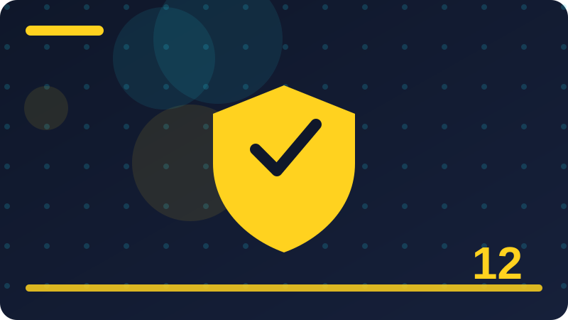

Chapter 12: Malware Basics and How to Avoid It

Section 1: What Malware Is, in Plain Words
Malware is a short name for malicious software, which means any program made to harm you, steal from you, or use your computer without your permission. The word covers a whole family of unwanted programs, including viruses, worms, trojans, ransomware, and spyware, each of which you will meet in this chapter. What they share is intent: they were written by someone who does not have your interests at heart, and they do things on your computer that you would not agree to if you understood them. A program that shows you adverts you did not ask for, a program that locks your files and demands money, and a program that quietly records what you type are all malware, even though they look and behave very differently.
It helps to think of malware as an uninvited guest in your house. Some guests smash things openly. Some steal quietly and leave no obvious trace. Some let other guests in through the back door. Some rearrange the furniture so that you cannot find anything. The damage varies, but the core problem is the same: someone else is controlling part of your home without your permission. Your computer is similar. When malware runs on it, part of your computer is working for someone else, and that someone else may be stealing your passwords, using your computer to attack others, or holding your files hostage. Understanding that picture matters more than memorising technical definitions, because it tells you what to protect and why.
Malware is not magic, and it does not appear from nowhere. It gets onto computers through actions people take, such as downloading a file, opening an attachment, clicking a link, or plugging in an infected drive, and sometimes through vulnerabilities in software that has not been updated. That is actually good news, because it means many infections are preventable by habits you can learn: downloading only from trusted sources, being careful with attachments, keeping software updated, and keeping backups. No habit makes you perfectly safe, and this chapter will not promise that, but good habits reduce your risk enormously, the way locking your door and looking both ways before crossing reduce risks in the physical world.
One more important point: malware is written by people, for reasons that are usually about money. Criminals steal bank details, sell personal information, demand ransoms, or rent out infected computers to other criminals. A few write malware for mischief or for political reasons, but money is the main motive, and that tells you what malware is most interested in: your accounts, your money, your identity, and your computer's processing power. Keep that in mind as you read this chapter, because it explains why the defences you will learn focus on protecting accounts, keeping backups, and being careful about what you download and open. Malware is a human problem with technical tools, and human habits are a large part of the answer.
malware_family = ["virus", "worm", "trojan", "ransomware", "spyware"]
for kind in malware_family:
print("Malware type:", kind, "-> unwanted program, remove and report it")Check: In your own words, what do all types of malware have in common, even though they behave differently?
Section 2: Viruses: The Old Name for a Big Family
The word virus is the one most people use for all malware, but technically it means something more specific, and the distinction is worth understanding. A computer virus is a program that attaches itself to another program or file and spreads when that program or file is shared or run. The comparison with a biological virus is deliberate: just as a biological virus needs a host cell to reproduce, a computer virus needs a host file, and it spreads when the infected file is copied to another computer. In the early days of personal computing, when people shared programs on floppy disks, viruses were the dominant threat, and the name stuck in everyday language for all malicious software.
A classic virus works in a few stages. First, it infects a program on your computer, hiding its code inside that program's files. Then, when you run the infected program, the virus code runs too, often without any visible sign. It may then infect other programs on the same computer, and when you share an infected program with someone else, by email, by USB drive, or by download, the virus travels with it and infects their computer too. Some viruses also carry a payload, which is the harmful action they perform, such as deleting files, displaying a message, or corrupting data. The payload may trigger immediately, or on a particular date, or after a particular event, which is why some infections seem to appear suddenly long after the virus arrived.
Modern computers face fewer classic viruses than they used to, for two reasons. First, operating systems and antivirus tools have improved at blocking the old tricks viruses used to attach themselves to programs. Second, criminals found that other kinds of malware, such as ransomware and trojans, make money more directly, so they shifted their effort there. But viruses have not disappeared, and the idea behind them, hiding inside something legitimate and spreading when it is shared, lives on in many modern threats. A document with a malicious macro, a program downloaded from an untrusted site, or a shared file that carries hidden code all follow the same pattern, even if technicians would not call them viruses in the strict sense.
For your own defence, the lessons of viruses are simple and durable. Do not run programs from untrusted sources, do not share programs casually without knowing where they came from, and keep your antivirus software running and updated, because detecting infected files is exactly what it is designed to do. If your antivirus ever tells you a file is infected, do not ignore it, do not try to run the file anyway to see what happens, and follow the tool's advice to quarantine or delete it. Curiosity about an infected file is understandable, but running it to see what it does is like tasting a suspicious mushroom to see if it is poisonous. Trust the warning, remove the file, and move on.
safe_sources = ["official app store", "developer's official website"]
unsafe_sources = ["random download link", "shared USB drive of unknown origin"]
for source in unsafe_sources:
print("Avoid running programs from:", source)Check: How does a classic computer virus spread, and why is the biological comparison used?
Section 3: Worms That Spread on Their Own
A worm is a type of malware that spreads on its own, without needing to attach itself to another program and without needing you to share a file. That self-spreading ability is what makes worms different from viruses, and it is also what makes them dangerous in a different way. A virus waits for you to run an infected program or share an infected file. A worm actively looks for other computers to infect, often by scanning a network for machines with a particular vulnerability, and copying itself to them. A single infected computer can therefore start a chain reaction, infecting dozens, then hundreds, then thousands of machines, sometimes in hours, without any human help along the way.
Worms spread through the same routes that legitimate network traffic uses. They may exploit a flaw in a network service, guess weak passwords on a service, or send themselves to contacts found on an infected machine. In workplaces and schools, where many computers share a network, a worm can move from machine to machine quickly, which is why network administrators take worms very seriously and why they patch vulnerabilities urgently. For a home user, the risk is lower but still real, especially if your computer is directly reachable from the internet, if you run old software with known flaws, or if your home network has devices with default passwords that were never changed.
The damage a worm causes is not always obvious. Some worms simply spread, consuming network capacity and slowing everything down, which is annoying but not catastrophic. Others carry a payload, like a virus, and may delete files, steal information, or install further malware on each machine they reach. Some worms turn infected computers into part of a botnet, which you will learn about in section nineteen, where thousands of machines are controlled together for criminal purposes. The worm itself may be quiet, but the botnet it builds can be used for large attacks, spam, or fraud. That is why a computer that seems fine, but is infected with a worm, can still be part of a serious problem for other people.
Your defences against worms are mostly the unglamorous habits this book keeps recommending, and that is reassuring, because it means you already know most of them. Keep your operating system and software updated, because updates close the vulnerabilities worms exploit. Use a firewall, which you will learn about in chapter sixteen, to block unwanted incoming connections. Use strong, unique passwords, and change default passwords on any device connected to your network, including routers and smart devices. And keep your antivirus running, because it can catch worms as they try to copy themselves. Worms spread automatically, but so, thankfully, can your defences, if you set them up and keep them updated.
worm_defences = ["Keep software updated", "Use a firewall",
"Change default passwords", "Keep antivirus running"]
for defence in worm_defences:
print("-", defence)Check: What is the key difference between a worm and a classic virus in how it spreads?
Section 4: Trojans: Gifts That Betray You
A trojan, short for trojan horse, is malware that pretends to be something useful or desirable in order to trick you into installing it. The name comes from the ancient story of a wooden horse that hid soldiers inside, offered as a gift to the city of Troy, and the comparison is perfect: the danger is not in breaking down your defences, but in persuading you to open the gate yourself. A trojan may pose as a free game, a useful tool, a video player update, a cracked version of paid software, or a document you were expecting. It looks legitimate, it may even work as advertised, and while you are using it, it quietly does something else: stealing passwords, opening a back door for attackers, or installing further malware.
Trojans are effective because they exploit trust and desire rather than technical flaws. People download them because they want something for free, because they are in a hurry, or because the fake program looks exactly like the real one. Criminals take advantage of this by creating convincing copies of popular software, by advertising fake tools on search results and social media, and by sending trojans as email attachments that look like invoices, delivery notices, or job applications. The lesson is not that you should never download anything, but that you should always ask where a program came from and whether you actually trust that source. A program from the official website of a known developer, or from your device's official app store, is far safer than the same program from a random link, a pop-up advert, or a stranger's message.
Once installed, a trojan can do many different harmful things, which is why trojans are often described as a delivery method rather than a single kind of damage. Some trojans steal information, such as passwords and bank details, and send it to the attacker. Some open a back door, which is a hidden way for the attacker to control your computer remotely, even after the trojan itself seems gone. Some download additional malware, turning one infection into several. Because a trojan often works correctly as a program, you may not notice anything wrong for a long time, which gives the attacker time to steal and to dig deeper into your system. That quiet success is what makes trojans so valuable to criminals.
Defending against trojans is mostly about the moment before installation, because after installation, removal can be difficult and uncertain. Download software only from official sources, be suspicious of free versions of paid software, and be careful with email attachments, even from people you know, because their accounts may have been compromised. Keep your antivirus running, because it can often recognise known trojans before they run. And if you ever realise you installed something suspicious, stop using the computer for sensitive tasks, disconnect it from the network, and get help removing the infection, rather than hoping it will go away. A trojan is a betrayal of trust, and the defence is to be slower to trust, especially when something is offered for free.
trusted = ["official app store", "developer's official website"]
untrusted = ["pop-up advert", "random link in a message", "free cracked software"]
for source in untrusted:
print("Do not install from:", source)Check: Why is a trojan often harder to notice than other malware, and what moment matters most for defending against it?
Section 5: Ransomware in Plain Words
Ransomware is malware that locks your files or your whole computer and demands payment, a ransom, for unlocking them. It usually works by encrypting your files, which means scrambling them with a key that only the attacker holds, so that your documents, photos, and other files become unreadable. You then see a message demanding payment, often in cryptocurrency, with instructions and a deadline, and sometimes a threat that the price will rise or the files will be deleted if you do not pay quickly. Ransomware is frightening by design, because fear makes people pay, and payment is the whole business model. Understanding how it works calmly, before it ever happens to you, is the best protection against that fear.
Ransomware reaches computers through the same routes as other malware: malicious email attachments, infected downloads, compromised websites, and vulnerabilities in unpatched software. Once it runs, modern ransomware works quickly and thoroughly. It may first try to find and destroy backups, as chapter eleven explained, by encrypting attached drives and deleting shadow copies that operating systems keep for recovery. It may then encrypt files across the computer and any connected network drives, and in some cases it also steals a copy of your files first, threatening to publish them if you do not pay, which is called double extortion. That combination, locking and stealing, makes ransomware a threat to both your files and your privacy, and it is why organisations as well as individuals take it seriously.
If ransomware ever hits you, the advice is consistent and worth memorising now. Do not pay if you can avoid it, because payment does not guarantee your files back, it marks you as someone who pays, and it funds more attacks. Disconnect the infected device from the network immediately, to stop the ransomware spreading and to stop it reaching cloud accounts. Get help from a trusted technician or your school or workplace IT team, and tell them honestly what happened. If you have a clean backup on a disconnected drive or in a cloud service with version history, the recovery path is to wipe the device, reinstall the system, and restore from that backup, as chapter eleven described. If you have no backup, your helper can check reputable sources for a free decryption tool for your exact ransomware variant, but for many modern variants, no such tool exists, and the files cannot be recovered without the attacker's key.
Prevention is therefore far better than cure, and the prevention steps are the ones this book repeats because they work. Keep backups, with at least one copy disconnected and out of reach. Keep software updated, so ransomware cannot exploit known flaws. Be careful with email attachments and downloads, which are the most common delivery routes. Use antivirus software, which can catch many ransomware variants before they run. And use strong account security, so attackers cannot reach your cloud backups. Ransomware is a serious threat, but it is not an unstoppable one. A person with good backups, updated software, and careful habits is a hard target, and criminals prefer easy ones. Be the hard target, and ransomware becomes a story you read about, not one you live through.
ransomware_plan = ["Do not pay", "Disconnect from network", "Get trusted help",
"Restore from a clean backup"]
for step in ransomware_plan:
print("-", step)Check: Why do security experts advise against paying a ransom, even when important files are locked?
Section 6: Spyware and Stolen Privacy
Spyware is malware that watches you without your knowledge and reports what it learns to someone else. It may record which websites you visit, what you search for, what you type, or even capture images from your screen or camera. Some spyware is crude, showing you adverts based on your browsing, which is annoying but not devastating. Other spyware is far more serious, stealing passwords, bank details, private messages, and personal photos, and sending them to criminals who use them for fraud or identity theft. The common thread is secrecy: spyware works best when you do not know it is there, because a victim who knows they are being watched will remove the watcher and change their passwords.
Spyware often arrives bundled with something else, such as a free program, a browser extension, or a trojan, which is why free software from untrusted sources is a recurring theme in this chapter. It can also arrive through malicious websites, infected attachments, or compromised apps. Once installed, spyware may hide itself carefully, using names that look like legitimate system programs, running quietly in the background, and starting again every time you restart your computer. That persistence is deliberate: a spyware program that only runs once is not very useful to its owner, but one that runs every day, for months, can build a detailed picture of your life, your routines, your contacts, and your finances.
The harm from spyware is not always immediate, which makes it easy to underestimate. You may not notice any money missing or any account broken into for weeks or months, while the spyware quietly collects the information that will later be used against you. When the harm finally arrives, it can be confusing, because you may not connect a bank fraud in December with a program you installed in June. That delay is part of why spyware is dangerous, and part of why regular security checks matter: antivirus scans, reviews of installed programs and browser extensions, and attention to unusual behaviour can catch spyware before it has collected enough to do serious damage. If you find a program or extension you do not recognise and did not deliberately install, treat it as suspicious until you can prove otherwise.
Defending against spyware combines the habits you already know with a few specific checks. Download software only from trusted sources, and read what a program or extension asks permission to do before you install it. A simple flashlight app that asks to read your messages is not a flashlight app, it is a spyware candidate, and you should refuse it. Review your installed programs and browser extensions every few months, and remove anything you do not recognise or no longer use. Keep your antivirus running and updated, and take its warnings seriously. If you ever suspect spyware, change your important passwords from a clean device, not from the infected one, because a keylogger on the infected machine would capture the new passwords too. Spyware steals privacy quietly, and the defence is to be noisy about checking: look at what is installed, question what you do not recognise, and remove it.
suspicious_permissions = ["flashlight app wants your messages",
"game wants your contacts",
"wallpaper app wants your location always"]
for item in suspicious_permissions:
print("Question:", item)Check: Why is spyware especially dangerous even when you notice no immediate harm?
Section 7: Adware and Unwanted Noise
Adware is software that shows you advertising you did not ask for, often in aggressive and intrusive ways. It may flood your browser with pop-up adverts, inject adverts into web pages that did not have them, redirect your searches to advertising pages, or change your browser's home page and search engine without your permission. Adware is sometimes considered less serious than ransomware or spyware, because it does not usually lock your files or steal your bank details, but that judgement misses the point. Adware is unwanted software running on your computer without your meaningful consent, it slows your machine, it tracks your browsing to target adverts, and it can be a stepping stone to more serious infections, because the adverts it shows may themselves lead to malicious sites.
Adware often arrives bundled with free software. You download a useful program, and during installation, if you click through quickly without reading, you also agree to install a toolbar, a browser extension, or a helper program that shows adverts. That bundling is sometimes disclosed in tiny print, which is why it is not always illegal, but it is rarely what the user actually wanted. The defence is to slow down during installation: choose the custom or advanced installation option when it is offered, read each screen, and decline any extra software you did not ask for. That single habit, reading installation screens instead of clicking next as fast as possible, prevents most adware infections, and it costs you less than a minute per installation.
Once adware is installed, it can be surprisingly stubborn. It may reinstall itself after you remove it, hide in multiple places, or change settings back after you fix them. Removing it usually means uninstalling the program that brought it, removing suspicious browser extensions, resetting your browser's home page and search settings, and running a full antivirus scan. If adware keeps coming back, get help rather than fighting it alone, because persistence often means there is a second piece of malware hiding somewhere you have not looked. Do not download a random removal tool advertised in a pop-up, because fake removal tools are a common way to install more malware, including the fake antivirus scams you will meet in section thirty-three.
The broader lesson of adware is about attention and consent. Legitimate advertising supports free websites and services, and there is nothing wrong with adverts you can see and choose to ignore. Adware is different because it takes control of your screen, your browser, and your attention without your real agreement, and it profits from that theft. Learning to spot adware, to remove it, and to prevent it by reading installation screens, is a small but real part of taking control of your own computer. A computer that shows you only what you asked to see is a computer that is yours, and keeping it that way is worth the minute it takes to read an installation screen carefully.
install_steps = ["Choose custom installation", "Read each screen",
"Decline extra software you did not ask for"]
for step in install_steps:
print("-", step)Check: How does most adware get installed, and what single habit prevents most of it?
Section 8: Keyloggers and Stolen Keystrokes
A keylogger is a program, or sometimes a small hardware device, that records every key you press and sends that record to someone else. That is a terrifyingly simple idea, because almost everything sensitive you do on a computer involves typing: passwords, bank details, private messages, search queries, and personal notes. A keylogger does not need to break encryption or guess your password. It simply watches your fingers, in digital form, and copies what they type. If a keylogger is running on your computer, every password you type while it is active may be compromised, which is why keyloggers are among the most feared kinds of spyware, and why the advice for dealing with them is specific and urgent.
Software keyloggers usually arrive like other malware, bundled with a trojan, hidden in a malicious download, or installed by someone with physical access to your computer. Hardware keyloggers are small devices plugged between a keyboard and a computer, or built into a compromised keyboard, and they are a reason to be careful about using unfamiliar computers or borrowed keyboards for sensitive tasks. Both kinds are designed to be invisible: a software keylogger hides among system processes, and a hardware keylogger looks like an ordinary adapter. You are unlikely to notice either by looking at your screen, which is why prevention and detection tools matter more than vigilance alone.
The most important defence against keyloggers is also the most important rule after discovering one: never change your passwords from an infected computer. If a keylogger is running, it will capture your new passwords just as it captured the old ones, and you will have changed them for nothing, while believing you are safe. Instead, disconnect the infected device from the network, get help removing the infection, and change your passwords from a different, clean device, starting with your email, because email is the key to resetting other accounts. Switch on multi-factor authentication wherever it is offered, because a stolen password alone is not enough to break into an account protected by a second factor, such as a code from your phone or a security key.
For everyday prevention, the familiar habits apply: download only from trusted sources, keep antivirus running, be careful with shared or public computers, and never type sensitive passwords on a computer you do not trust. On a computer you do trust, keep your software updated and review installed programs occasionally, because a keylogger that arrived months ago may still be running quietly. Keyloggers are a reminder that security is not only about strong passwords, but about the trustworthiness of the device you type them into. A strong password typed into a compromised computer is a strong password handed to a criminal, and no password, however clever, can survive that. Protect the device, protect the password, and use a second factor, and a keylogger becomes a much weaker weapon.
if_keylogger_suspected = ["Disconnect from network", "Get help removing it",
"Change passwords from a CLEAN device",
"Switch on multi-factor authentication"]
for step in if_keylogger_suspected:
print("-", step)Check: Why must you never change your passwords from a computer you suspect has a keylogger?
Section 9: Rootkits and Deep Hiding Places
A rootkit is malware designed to hide deep inside a computer, often at a level below the operating system, where normal security tools have difficulty seeing it. The name comes from root, the most powerful account on some systems, and kit, meaning a set of tools. A rootkit's job is not necessarily to cause damage itself, but to hide other malware, making it invisible to antivirus scans, to the list of running programs, and to the user. It is like a burglar who does not just break into your house, but also paints over the security cameras and rewrites the guest book, so that nobody can tell he was ever there. That hiding ability is what makes rootkits particularly concerning to security professionals.
Rootkits hide in different places depending on how sophisticated they are. Simpler ones hide among ordinary programs, using names that mimic legitimate system files and techniques that make them hard to spot in a casual glance. More advanced ones hide in the boot process, which is the sequence a computer follows when it starts up, so that they are running before the operating system and its security tools even begin. The most advanced ones hide in firmware, which is the low-level software built into hardware itself, and those are extremely difficult to remove, sometimes requiring the hardware to be replaced. Fortunately, firmware rootkits are rare and are usually aimed at high-value targets, not ordinary users, but the existence of deep hiding places is a useful reminder that not all malware is visible or easy to remove.
For an ordinary user, the practical lesson is not to try to hunt rootkits yourself with exotic tools, but to recognise the signs that something deep may be wrong and to get expert help. Signs include an antivirus that stops working or cannot update, security settings that change back after you fix them, a computer that behaves strangely even after a full scan finds nothing, and programs that reappear after you delete them. If you see those signs, do not keep fighting alone with random tools downloaded from the internet, because you may make things worse. Disconnect from the network, back up your important files from a clean state if you safely can, and get help from a trusted technician or your school or workplace IT team, who have specialised tools for deep infections.
The deeper lesson of rootkits is about trust and recovery. When a computer is deeply compromised, the only way to be confident it is clean again is often to wipe it completely and reinstall the operating system from trusted installation media, then restore files from a known-clean backup. That sounds drastic, and it is, but it is also why this book keeps returning to backups: a clean backup makes a drastic recovery possible without losing your work. Rootkits teach humility. No security tool sees everything, no user can spot every hiding place, and the honest response to a deep infection is not to argue with it, but to rebuild cleanly and restore from safety. That is a mature, professional response, and it is one you should not be embarrassed to take.
deep_infection_signs = ["Antivirus stops working", "Settings change back after fixing",
"Deleted programs reappear"]
for sign in deep_infection_signs:
print("Get expert help if you see:", sign)Check: What is a rootkit's main job, and why does that make it different from malware that simply causes visible damage?
Section 10: How Malware Gets onto a Computer
Malware does not teleport onto computers. It arrives through a limited number of routes, and learning those routes is one of the most useful things in this chapter, because each route has a defence, and blocking the routes blocks most infections. The most common route is the human one: someone downloads a file, opens an attachment, clicks a link, or installs a program that turns out to be malicious. Attackers are skilled at making those actions feel safe, urgent, or rewarding, using fake invoices, delivery notices, job offers, free software, and alarming warnings. The defence is to slow down at the moment of action, check the source, and ask whether you were expecting this file or this message, before you open or install anything.
The second route is technical: malware exploiting a vulnerability in software that has not been updated. A vulnerability is a flaw in a program that an attacker can use to run their own code, and when a vulnerability becomes known, criminals race to exploit it before users patch it. That race is why chapter ten insisted on updates, and why automatic updates are so valuable: they close the door before the attacker arrives, without you having to remember anything. Computers that run old operating systems, old browsers, or old plugins are the easiest targets for this route, because their flaws are well known and widely exploited. Keeping software current is not a boring chore. It is closing doors that attackers are actively trying.
The third route is physical and local: infected USB drives, borrowed devices, and shared computers. A USB drive that was plugged into an infected computer can carry malware to the next computer it touches, especially if that computer is set to automatically run programs from inserted drives. A shared computer used by many people can spread malware between users, especially if accounts are not separated or if one user installs something careless. The defences are simple: do not plug in drives you do not trust, disable automatic running of programs from removable drives if you can, and be careful about shared machines, using your own account and not saving passwords on them.
The fourth route is the network itself: a computer directly reachable from the internet, a home network with devices still using default passwords, or a public Wi-Fi network where an attacker can intercept traffic. Firewalls, which you will learn about in chapter sixteen, block unwanted incoming connections, and strong passwords on routers and smart devices close the easiest network doors. No single defence blocks every route, which is why security uses layers: careful habits block the human route, updates block the technical route, caution with drives blocks the physical route, and firewalls and passwords block the network route. Together, those layers make infection unlikely, and that layered thinking is the foundation of everything else in this book.
routes = {"human": "check before opening", "technical": "keep software updated",
"physical": "do not trust unknown drives", "network": "firewall + strong passwords"}
for route, defence in routes.items():
print(route, "->", defence)Check: Name the four main routes malware uses to reach a computer, and one defence for each.
Section 11: Infected Downloads and Fake Software
Downloading software is one of the most ordinary things people do on a computer, and it is also one of the most common ways malware arrives, because attackers know that people are always looking for programs, games, tools, and media. The danger is not in downloading itself, but in downloading from the wrong place, or downloading the wrong file from a place that looks right. Attackers create convincing fake websites that mimic official download pages, buy advertising that puts their fake site at the top of search results, and upload infected copies of popular programs to file-sharing sites and forums. A user who searches for a program and clicks the first result, without checking the address, may download a trojan that looks exactly like the program they wanted, and may not realise the mistake until their antivirus warns them, or until their accounts are compromised.
The defence begins with a simple rule: get software from its official source. For a phone, that usually means the official app store. For a computer, it means the developer's official website, or a reputable store run by the operating system maker, not a random download site that aggregates programs from everywhere. When you search for a program, check the web address carefully before clicking, because fake sites often use addresses that are one letter different from the real one, or add an extra word that makes them look official. Bookmark the official sites of programs you use often, so you return to the real page instead of searching fresh each time and risking a fake result. That small habit, bookmarking trusted sources, prevents a surprising number of infections.
Be especially careful with software that is offered for free when it normally costs money. Cracked software, key generators, and pirated programs are among the most reliable carriers of malware, because the people who crack and distribute them often add malware as their payment for the free service. A free copy of an expensive program is rarely free. It is usually paid for with your privacy, your accounts, or your computer's safety. The same caution applies to free versions of tools that promise extraordinary results, such as programs that claim to speed up your computer dramatically, clean hundreds of errors, or unlock hidden features. Legitimate tools do not need to make miraculous promises, and miraculous promises are a reliable sign of a scam.
Before running any downloaded file, let your antivirus scan it, and pay attention if it warns you. Do not disable your antivirus to install a program, because a program that requires you to switch off your protection is telling you, in plain language, that your protection would block it. Check the file's size and name against the official site if you can, and if anything feels wrong, the site looks unprofessional, the download starts without you clicking anything, or the installer tries to add extra programs, stop and delete the file. You can always download again from the official source. A deleted download costs you minutes. An installed trojan can cost you far more. Download slowly, download officially, and let your antivirus do its job.
download_rules = ["Use the official source", "Check the web address carefully",
"Never disable antivirus to install", "Beware free copies of paid software"]
for rule in download_rules:
print("-", rule)Check: Why is a program that asks you to disable your antivirus before installing it a major warning sign?
Section 12: Email Attachments and Malicious Links
Email is one of the oldest and still most effective delivery routes for malware, because it reaches people directly, it can pretend to come from someone they trust, and it asks them to take a single action, open an attachment or click a link, that is enough to start an infection. Attackers send millions of malicious emails, knowing that only a small fraction need to succeed. They disguise them as invoices, delivery notifications, job offers, bank alerts, password resets, and messages from colleagues, and they write them to create urgency, curiosity, or fear, because a person who is rushing is less likely to check carefully. Chapter seven covers email safety in detail, but this section focuses on the malware angle: how attachments and links actually deliver infections, and how to stop them.
An attachment can carry malware in several ways. It may be a program disguised as a document, such as an executable file with a double extension that makes it look like a PDF. It may be a real document containing a malicious macro, which is a small program that runs inside the document when you open it and enable its content. It may be a compressed archive, such as a zip file, that hides a malicious program inside, counting on you to extract and run it without thinking. In each case, the infection requires you to take an extra step beyond simply receiving the email: opening the attachment, enabling macros, or extracting and running the contents. That extra step is your defence point. If you do not take it, the malware stays inert, however scary the email looks. Never enable macros in a document you were not expecting, and never run a program that arrived by email, even if the sender looks familiar, because their account may have been compromised.
A malicious link works differently. Clicking it may take you to a fake website that tries to trick you into downloading malware or entering your password, or to a compromised website that tries to exploit a vulnerability in your browser. The defence is to hover over a link, or long-press it on a phone, to see where it actually leads before clicking, and to be suspicious of links in unexpected messages, especially those that create urgency or offer something surprising. If a message claims your account will be closed, your package is delayed, or you have won something, go to the service directly by typing its address yourself or using its official app, rather than clicking the link in the message. That detour takes seconds and defeats most link-based attacks completely.
If you ever open an attachment or click a link and realise it was malicious, act quickly but calmly. Disconnect from the network, do not enter any passwords, run a full antivirus scan, and get help if the scan finds something. Tell the person or organisation the message pretended to come from, if you can, because they may need to warn others. Remember that a mistake is not a moral failure: attackers send millions of these messages precisely because some work on careful people who were tired or distracted. The goal is to make check, pause, verify a habit strong enough that most malicious messages fail.
email_checks = ["Were you expecting this attachment?", "Does the link address match the sender?",
"Does it create false urgency?"]
for question in email_checks:
print("Ask:", question)Check: Why is the moment you are asked to enable macros in an unexpected document a critical defence point?
Section 13: USB Drives and Borrowed Devices
A USB drive is a small, convenient, and surprisingly effective carrier of malware, because it moves physically between computers in a way that bypasses network defences entirely. A drive that was plugged into an infected computer can pick up malware, and when it is plugged into your computer, that malware can try to run, especially if your computer is set to automatically run programs from removable drives. This is not a theoretical risk. There have been famous incidents in which malware spread through an organisation because an infected drive was left in a car park and a curious employee plugged it in, and in which malware spread between countries on drives carried by travellers. The lesson is simple and memorable: never plug in a drive you found, were given by a stranger, or do not fully trust.
Borrowed devices carry a similar risk in a subtler form. A borrowed laptop, a shared computer in a library or internet café, or a friend's phone may already be infected, and using it for sensitive tasks, such as checking email or banking, can expose your passwords to malware already running on that machine. Conversely, plugging your own clean drive into an infected borrowed computer can infect your drive, which then infects your own computer when you plug it in at home. The chain works in both directions, and the defence is to treat borrowed devices and unknown drives with the same caution you would treat a stranger's food: you do not know where it has been, so you do not consume it uncritically.
Practical defences are straightforward. Disable automatic running of programs from USB drives if your operating system allows it, so that plugging in a drive shows you its files without running anything automatically. Scan any drive you are given with your antivirus before opening its files, and open files by browsing to them deliberately, rather than double-clicking whatever appears first. Do not use borrowed or public computers for banking, email, or other sensitive accounts, and if you must use one, do not save passwords on it, sign out of everything when you finish, and change your passwords from a trusted device afterwards. Keep your own drives labelled and separate, so you do not confuse a trusted drive with an unknown one, and do not lend your main backup drive to others, because a borrowed drive can return infected.
Finally, think about the social pressure involved. Someone offering you a drive with files on it may be a friend trying to help, and refusing can feel rude. You do not need to refuse rudely. You can ask them to send the files by email or a cloud link instead, or you can scan the drive first and explain why. Most people understand once you explain that drives can carry infections without anyone intending harm. The friend who gave you the drive may not know it is infected, and your caution protects them too, because you can warn them to check their own computer. Caution with drives is not paranoia. It is hygiene, like washing your hands, and it protects everyone in the chain.
usb_rules = ["Never plug in a found drive", "Scan before opening files",
"Disable automatic running from drives", "Do not lend your backup drive"]
for rule in usb_rules:
print("-", rule)Check: How can a clean USB drive become infected simply by being plugged into an infected computer?
Section 14: Signs Your Computer May Be Infected
Knowing the signs of infection matters, because malware often tries to hide, and the sooner you notice something wrong, the sooner you can act and the less damage it can do. No single sign proves infection, because computers slow down, crash, and behave oddly for many innocent reasons, such as a full drive, an overheating processor, or a buggy update. But a pattern of signs, especially several at once, or a sign that appears suddenly after you downloaded something or clicked a link, is worth investigating. This section lists the most common signs, and the right response to each, so that you can tell the difference between a computer having a bad day and a computer that needs help.
The most common sign is a sudden change in speed or behaviour. A computer that was fast yesterday and is suddenly slow, that takes a long time to start, that freezes often, or whose fan runs loudly even when you are doing nothing, may be running hidden malware in the background. Similarly, a browser that suddenly shows many pop-up adverts, redirects your searches, changes your home page, or adds toolbars you did not install, is a strong sign of adware or a browser hijacker. Programs that crash unexpectedly, files that disappear or change without you touching them, and settings that change back after you fix them, are all worth noting, especially if they started around the same time.
Other signs involve your accounts and your network. Messages sent from your email or social media accounts that you did not write, friends reporting strange messages from you, password reset emails you did not request, or logins from places you have never been, all suggest that your accounts, or the device you use to access them, may be compromised. Unusual network activity, such as your internet slowing dramatically, your data usage spiking, or your antivirus warning about blocked connections, can also indicate malware communicating with its owner. On a phone, signs include a battery that drains unusually fast, a phone that feels hot when idle, data usage that jumps without explanation, and apps you do not remember installing.
The right response to signs of infection is calm and methodical, not panicked clicking. Note what changed and when, and what you did just before it changed, because that information helps anyone who assists you. Run a full antivirus scan, and follow its advice. Disconnect from the network if you suspect serious infection, especially ransomware or account theft, to stop further damage. Do not enter sensitive passwords on the suspect device, and do not download random removal tools from pop-ups, which are often malware themselves. If the signs persist after a scan, or if you suspect a keylogger or ransomware, get trusted help. Noticing a sign is not a diagnosis, but it is a reason to investigate, and investigating early is what turns a small infection into a small story instead of a large disaster.
warning_signs = ["Sudden slowness", "Unexpected pop-ups", "Browser settings changed",
"Messages you did not send", "Unknown programs installed"]
for sign in warning_signs:
print("Investigate:", sign)Check: Why does a pattern of several sudden signs matter more than any single sign on its own?
Section 15: Slow Computers: Malware or Something Else?
A slow computer is one of the most common complaints in the world, and malware is only one of many possible causes, which is why this section teaches you to investigate before assuming the worst. A computer can slow down because its drive is nearly full, because it has too many programs starting automatically, because it is overheating, because a legitimate program is using a lot of resources, or because its hardware is simply old for the tasks you are asking of it. Jumping straight to the conclusion that you have malware can waste time and cause unnecessary worry, while ignoring a real infection because you assume the computer is just old can let malware run for months. The skill is to check the innocent causes first, methodically, and to let the evidence guide you.
Start with the simplest checks. How full is your drive? A drive that is more than ninety percent full leaves little room for temporary files and can slow everything dramatically, and freeing space by deleting things you do not need or moving large files to an external drive often restores speed immediately. How many programs start when you turn the computer on? Many programs add themselves to startup without asking clearly, and each one consumes memory and processor time. Reviewing your startup list and disabling programs you do not need at startup is a safe, reversible step that often helps a great deal. Is the computer hot, or is its fan loud? Overheating causes processors to slow themselves down to avoid damage, and cleaning dust from vents or using the computer on a hard surface can help, although you should not open a device you are not confident about.
Next, check what is actually using resources. Your operating system has a built-in tool, often called a task manager or activity monitor, that shows which programs are using the processor, memory, and disk. Open it when the computer is slow, and look for a program using a large share of resources. If it is a program you recognise and are currently using, such as a video editor or a game, the slowness may simply be that program doing heavy work. If it is a program you do not recognise, using a lot of resources while you are doing nothing, note its name and investigate it carefully, without deleting system files you do not understand. That investigation, checking the name, searching for it from a trusted device, and running an antivirus scan, is the bridge between a slow computer and a malware investigation.
Finally, run a full antivirus scan, and compare the computer's behaviour before and after your checks. If freeing space and trimming startup programs restores speed, malware was probably not the cause, but the scan is still worth doing for peace of mind. If the computer remains slow, or if the scan finds something, follow the removal steps in later sections and get help if needed. A slow computer is a symptom, not a diagnosis, and treating symptoms carefully, by checking the simple causes first and scanning for malware as part of the process, is a professional habit. It saves you from panic, it saves you from complacency, and it usually fixes the problem, whatever it turns out to be.
slow_checks = ["Drive nearly full?", "Too many startup programs?",
"Overheating?", "Unknown program using resources?"]
for question in slow_checks:
print("Check:", question)Check: Before assuming malware, what three innocent causes of slowness should you check first?
Section 16: Pop-Ups, Toolbars and Browser Hijacks
Your browser is the program you use most, which makes it a prime target for malware that wants your attention, your clicks, and your searches. The most visible browser attacks are pop-ups, unwanted toolbars, and browser hijacks, and although they rarely destroy files, they are deeply annoying, they slow your browsing, and they can lead you to dangerous sites. A pop-up is a small window that appears without you asking for it, often advertising something dubious or warning you about a fake problem. A toolbar is a strip added to your browser, often by bundled software, that changes how your browser looks and may track your searches. A hijack is more serious: your home page, your default search engine, or your new tab page is changed without your permission, so that every search you make goes through a site the attacker controls.
Browser hijacks work because most people do not check their browser settings often, and because the changes look plausible at first. Your searches still return results, so you may not notice that those results come from an advertising site that profits from your clicks and may show you misleading or malicious links. Some hijackers also block you from changing the settings back, or change them again after you fix them, which is a sign that a deeper infection, such as adware or a trojan, is also present. Pop-ups that warn you about viruses and urge you to call a number or download a tool are almost always scams, as section thirty-three explains in detail. Real antivirus software does not advertise itself through alarming pop-ups on random websites, and a website cannot reliably know whether your computer is infected just from you visiting it.
Removing browser malware usually starts with the browser itself. Remove any extensions you do not recognise or no longer use, because malicious extensions are a common cause of hijacks and unwanted adverts. Reset your home page, search engine, and new tab settings to the ones you want, and check your browser's settings for any unfamiliar search engines or startup pages. Uninstall any program you do not recognise that was installed around the time the problem started, and run a full antivirus scan. Most browsers also offer a reset or clean-up option that restores default settings without deleting your bookmarks, and that option is worth using if manual fixes do not work. After cleaning, restart the browser and check that the changes stay fixed. If they revert, get help, because persistence suggests a deeper infection.
Prevention is, as usual, about the installation moment and about extensions. Install extensions only from your browser's official store, check what permissions an extension asks for, and remove extensions you no longer use, because every extension is a small program with access to your browsing. During software installation, decline bundled toolbars and browser changes, as section seven advised. Keep your browser updated, because updates close vulnerabilities that hijackers exploit. A clean browser, with only extensions you chose and trust, is faster, safer, and far more pleasant to use. It is also a browser that works for you, not for advertisers you never agreed to serve, and keeping it that way is a small act of control over your own digital life.
browser_cleanup = ["Remove unknown extensions", "Reset home page and search engine",
"Uninstall suspicious programs", "Run a full antivirus scan"]
for step in browser_cleanup:
print("-", step)Check: Why is a browser hijack that redirects your searches more dangerous than it first appears?
Section 17: What Malware Does with Your Files
Malware interacts with your files in several distinct ways, and understanding each one helps you judge the damage and choose the right recovery. The most destructive way is deletion or corruption: some malware deletes files, overwrites them with garbage, or damages the structures that let your computer find them, leaving you with missing documents and broken programs. This kind of damage is often obvious, because files you expected are suddenly gone or will not open, and it is the reason backups exist. If you have a good backup, deleted or corrupted files are an inconvenience. If you do not, they may be a permanent loss, which is why the backup chapter came before this one, and why its lessons matter so much when malware strikes.
The second way is encryption, which is ransomware's method, covered in section five. Encrypted files are not deleted, but they are scrambled so thoroughly that they are unreadable without the key, and for practical purposes, they might as well be gone unless you have a backup or a decryption tool. The third way is theft: spyware and trojans may copy your files, especially documents, photos, and databases containing personal information, and send them to the attacker. Stolen files are a privacy disaster even if your originals remain untouched, because you cannot un-steal a file. Once a copy has left your computer, you cannot control where it goes, who sees it, or how it is used, which is why preventing theft matters more than recovering from it.
The fourth way is quieter: malware may modify your files subtly, adding malicious code to documents, changing settings files, or altering programs so that they behave differently. A document with a malicious macro, for example, looks like an ordinary document but carries code that runs when the document is opened. Modified system files can weaken your computer's defences, disable security tools, or open back doors for future attacks. This kind of modification is dangerous precisely because it is hard to notice: your files still exist, they still mostly work, but they have been tampered with in ways that serve the attacker. That is why, after a serious infection, security professionals often recommend wiping and reinstalling the system rather than trying to clean individual files, because cleaning cannot guarantee that every modification has been found.
The recovery lesson across all four kinds of file damage is the same, and it is worth stating plainly. Backups protect you from deletion, corruption, and encryption, because you can restore clean copies. Backups do not protect you from theft, because the stolen copy already left, which is why prevention, through careful downloads, updated software, and antivirus, matters as much as recovery. And backups only protect you if they are clean themselves, which is why you should restore from a backup made before the infection, not from one made after it, when the backup itself may contain infected or encrypted files. Know what malware can do to files, keep clean backups out of its reach, and you have a recovery plan for every kind of file damage, not just the obvious ones.
file_damage = ["Deletion", "Corruption", "Encryption (ransomware)", "Theft", "Quiet modification"]
for kind in file_damage:
print("Malware can cause:", kind)Check: Why do backups protect you from file deletion and encryption, but not from file theft?
Section 18: What Malware Does with Your Accounts
Malware's most profitable target is often not your files, but your accounts, because accounts are keys to money, identity, and communication. A stolen email account lets an attacker reset your other accounts, read your messages, and impersonate you to your contacts. A stolen bank account lets them steal money directly. A stolen social media account lets them scam your friends, spread further malware, and damage your reputation. A stolen gaming or shopping account lets them spend your money or sell your items. Accounts are valuable because they are trusted: services trust a signed-in account, contacts trust messages from a familiar name, and banks trust instructions from an authenticated user. Malware that steals account credentials therefore steals trust itself, and the damage spreads far beyond one computer.
Malware steals accounts in several ways. Keyloggers, covered in section eight, capture passwords as you type them. Spyware may steal passwords saved in your browser or in files on your computer. Trojans may show you a fake login page that looks identical to a real service, capturing whatever you enter. Some malware steals session tokens, which are the digital passes that keep you signed in to a service, allowing an attacker to use your account without even knowing your password. That last method is why signing out of important accounts on shared computers matters, and why a service asking you to sign in again unexpectedly can sometimes be a sign that your session was revoked for safety, rather than an annoyance to work around.
The consequences of stolen accounts can be confusing and distressing, because they often appear far from the infected computer. You may learn about the theft from a friend who received a strange message, from a bank alert about a transaction you did not make, or from being locked out of your own account because the attacker changed its password and recovery options. That distance in time and place makes it hard to connect the theft to the infection, and it is why the response to suspected account theft must be broad: change passwords from a clean device, starting with email, switch on multi-factor authentication everywhere it is offered, review recent activity on your important accounts, and warn contacts who may have received scam messages from you. Chapter twenty-five covers identity theft response in detail, and its steps apply here too.
Prevention focuses on making stolen passwords less useful. Use a unique password for each important account, so that one theft does not unlock everything, and store those passwords in a reputable password manager rather than in a plain file or in your browser alone. Switch on multi-factor authentication, because a second factor, such as a code from your phone, blocks most account takeovers even when the password is stolen. Keep your devices clean and updated, so malware has fewer chances to steal credentials in the first place. Accounts are the bridge between your computer and the wider world, and protecting them is not only about protecting yourself. It is about protecting everyone who trusts messages that appear to come from you, which is a responsibility worth taking seriously.
account_protection = ["Unique password per account", "Password manager",
"Multi-factor authentication", "Review account activity"]
for item in account_protection:
print("-", item)Check: Why is a stolen email account especially dangerous compared with other stolen accounts?
Section 19: Botnets: Many Computers, One Master
A botnet is a network of infected computers, called bots, that are controlled together by an attacker, often called a botmaster, without their owners' knowledge. The idea is simple and chilling: one infected computer is useful to a criminal, but ten thousand infected computers, working together, are a weapon. A botnet can send millions of spam emails, launch attacks that overwhelm websites, steal information on a massive scale, mine cryptocurrency using other people's electricity, or spread further malware. The owners of the infected computers usually notice nothing, or only a slight slowing of their machines, while their computers quietly serve a criminal enterprise. That invisibility is what makes botnets so persistent and so hard to dismantle.
Computers join botnets through the same infections you have already learned about: trojans, worms, and other malware that installs a small control program and connects the computer to the attacker's command system. That system may use a central server, or it may use a peer-to-peer design in which infected computers talk to each other, making the botnet harder to shut down by taking down a single server. Once connected, the infected computer waits for instructions, which may arrive rarely, so that the owner notices nothing unusual for months. When instructions do arrive, the computer carries them out alongside its normal work, sending spam, participating in an attack, or scanning for new victims, and then returns to waiting. The owner pays the electricity and internet costs, while the attacker collects the profits.
Botnets matter to ordinary users for two reasons. First, your computer could be part of one without you knowing, which means your machine could be used to attack others, send spam in your name, or commit fraud that is traced back to your internet connection. That is not only a moral problem, it can become a practical one, if your internet provider notices suspicious traffic from your connection or if your address is blocked by services that detect botnet activity. Second, botnets are the infrastructure behind many of the attacks you read about in the news, from large website outages to waves of spam and fraud. Understanding botnets helps you understand why individual infections matter collectively: one infected computer is a small problem, but millions of them, coordinated, are a major threat to the internet itself.
Defending against botnets is, reassuringly, the same as defending against malware in general, because a computer cannot join a botnet unless it is infected first. Keep software updated, use antivirus, be careful with downloads and attachments, and change default passwords on all devices connected to your network. If you suspect your computer is part of a botnet, signs include unexplained network activity, spam complaints, or warnings from your internet provider, run a full antivirus scan, disconnect from the network if needed, and get help. You can also check your network's activity through your router's admin page if you know how, although that is an advanced step. The key insight is collective: every computer kept clean is one fewer soldier in a criminal army, and keeping your own machine clean is a small contribution to everyone's safety.
botnet_uses = ["Sending spam", "Overwhelming websites", "Stealing information",
"Mining cryptocurrency on victims' machines"]
for use in botnet_uses:
print("Botnets are used for:", use)Check: Why might the owner of a computer in a botnet notice nothing wrong for months?
Section 20: Malware on Phones
Phones are computers, and they can get malware, even though many people think of them as safer than laptops. Phone malware includes malicious apps, spyware that tracks location and messages, adware that floods the phone with adverts, and banking trojans that steal financial details. It arrives through fake apps, apps downloaded outside the official store, malicious links in messages, and compromised websites, following the same patterns as computer malware, adapted for a smaller screen and a device that people trust more and check less. A phone is also more personal than a computer: it holds your messages, your photos, your location history, and your banking apps, so malware on a phone can be more intimate in what it steals, even if it is less likely to destroy files outright.
The official app store is your strongest defence on a phone, because stores review apps before listing them and can remove malicious ones remotely. Downloading apps from outside the store, sometimes called sideloading, bypasses that review, and is one of the most common ways phone malware arrives. Fake versions of popular apps, offered on websites or in messages, are another route: they look like the real app, they may even work like it, but they also steal data or show unwanted adverts. Be especially suspicious of apps that promise free versions of paid services, that ask for permissions unrelated to their function, such as a torch app asking for your contacts, or that arrive through a link in a message from a stranger. If an app asks for more access than it needs, refuse the permission or do not install the app at all.
Signs of phone malware resemble those on a computer: a battery that drains quickly, a phone that runs hot while idle, data usage that jumps without explanation, unexpected pop-up adverts, apps you do not remember installing, and settings that change on their own. If you suspect infection, review your installed apps and remove anything unfamiliar or unused, check app permissions and revoke anything excessive, and run a security scan if your phone offers one. For serious infections, especially suspected banking trojans or spyware, back up your photos and important data, then reset the phone to factory settings, which removes almost all malware, and restore only from a clean backup, reinstalling apps from the official store one by one. That sounds drastic, but it is the reliable way to be sure a phone is clean, and it is far better than living with spyware that reads your messages.
Everyday phone hygiene prevents most phone malware. Keep your phone's operating system updated, download apps only from the official store, read permissions before granting them, and be careful with links in messages, even from people you know, because their accounts may be compromised. Do not root or jailbreak your phone unless you fully understand the risks, because doing so removes many of the protections that keep malware out. Treat your phone as the personal computer it is, with the same caution you would give a laptop, and it will be as safe as a modern phone can reasonably be. The phone in your pocket holds your life. Guarding it is not paranoia. It is common sense.
phone_rules = ["Download only from the official store", "Read app permissions",
"Keep the system updated", "Remove apps you do not recognise"]
for rule in phone_rules:
print("-", rule)Check: Why is downloading an app from outside the official store riskier than downloading it from the store?
Section 21: Malware on Smart Devices
Smart devices, such as cameras, speakers, televisions, light bulbs, and even fridges, are small computers connected to your home network, and they can be infected with malware just like larger computers can. The risk is often higher, not lower, because smart devices usually have weaker security: they may ship with default passwords that owners never change, they may receive few or no software updates, and they may run old software with known vulnerabilities. Attackers scan the internet for such devices constantly, and when they find one with a default password or an unpatched flaw, they infect it and add it to a botnet, or use it as a doorway into the rest of the home network. A compromised camera can also spy on a household, which makes smart device security a privacy issue as well as a technical one.
The most important step for smart devices is to change default passwords immediately, on every device, including your router, which is the gateway to your whole network. Use a strong, unique password for each device's admin account, and if the device supports it, switch on automatic updates so that security fixes arrive without you remembering them. If a device no longer receives updates from its maker, consider whether you still need it connected to the internet, because an unpatched device on your network is a permanent open door. Segmenting your network, putting smart devices on a separate guest network from your computers and phones, is an advanced step that limits the damage if one device is compromised, and it is worth learning about as you grow more confident, although it is not essential for beginners.
Buying decisions matter too. Choose smart devices from reputable makers with a track record of providing updates, and be suspicious of very cheap devices from unknown brands that may never be updated at all. Before buying, check whether the maker publishes security updates and for how long they promise to support the device. After buying, check the device's settings for features you do not need, such as remote access from the internet, and switch them off if you will not use them. Every feature left on is a potential doorway, and a camera that you only use at home does not need to be reachable from anywhere in the world. Reducing what a device can do, to only what you actually need, is a simple and powerful security principle.
Finally, watch for signs of compromise on smart devices, just as you would on a computer: a camera light turning on unexpectedly, a speaker behaving oddly, a device that becomes unreachable, or unusual traffic on your network. If you suspect a device is compromised, disconnect it from the network, reset it to factory settings, change its password, and update its software before reconnecting it. If it cannot be updated or secured, replace it or leave it disconnected. Smart devices bring convenience, but they also bring new computers into your home, each with its own risks. Treat them as computers, because that is what they are, and give them the same basic care: unique passwords, updates, and attention when they behave strangely.
smart_rules = ["Change default passwords", "Switch on automatic updates",
"Switch off remote access you do not need", "Buy from reputable makers"]
for rule in smart_rules:
print("-", rule)Check: Why are smart devices often easier for attackers to infect than a well-maintained computer?
Section 22: How to Avoid Malware Every Day
Avoiding malware is not a single action, but a set of small daily habits that together make infection unlikely. The habits are not dramatic, and none of them requires expertise, which is good news, because it means anyone can follow them. The first habit is to pause before opening, downloading, or installing anything, and ask where it came from and whether you were expecting it. That pause, lasting only seconds, defeats the majority of trojans, malicious attachments, and fake downloads, because those attacks depend on you acting without thinking. Attackers design their messages to create urgency and bypass that pause, so protecting the pause itself, by refusing to be rushed, is a genuine security skill.
The second habit is to keep your software updated, with automatic updates switched on wherever possible. Updates close vulnerabilities, and vulnerabilities are the technical doors malware uses when human tricks fail. The third habit is to keep your antivirus running and updated, and to take its warnings seriously instead of dismissing them as false alarms. Antivirus software is not perfect, but it catches a great deal of known malware automatically, and ignoring its warnings is like ignoring a smoke alarm because it has gone off before when you burned toast. The fourth habit is to use strong, unique passwords and multi-factor authentication, so that even if malware steals one password, it cannot easily unlock everything else.
The fifth habit is to back up regularly, with at least one copy out of malware's reach, because backups turn many infections from disasters into inconveniences. The sixth habit is to be careful with removable drives, shared computers, and public Wi-Fi, following the cautions from earlier sections. The seventh habit is to review what is installed on your devices every few months, removing programs, apps, and extensions you do not recognise or no longer use, because every unnecessary program is a potential hiding place or vulnerability. None of these habits is difficult on its own, and together they form layers of defence, so that if one layer fails, another catches the attack. Security professionals call this defence in depth, but you can simply think of it as not relying on a single lock for your whole house.
Finally, cultivate a healthy attitude towards security messages and offers. Be suspicious of anything that creates panic, promises something too good to be true, or asks you to disable your protection. Legitimate companies do not warn you about viruses through alarming pop-ups, do not ask for your password by email, and do not require you to switch off your antivirus to install their software. When in doubt, stop, and check through a separate route: type the official address yourself, use the official app, or ask someone knowledgeable. Daily malware avoidance is not about fear. It is about a calm, sceptical, methodical approach to the things you open, download, and install, repeated so often that it becomes second nature. That second nature is the best antivirus you will ever have, because it travels with you to every device you use.
daily_habits = ["Pause before opening", "Keep software updated", "Keep antivirus running",
"Unique passwords + multi-factor authentication", "Back up regularly"]
for habit in daily_habits:
print("-", habit)Check: Why does a short pause before opening a file or link defeat so many malware attacks?
Section 23: Safe Download Habits
Safe downloading is a skill worth practising deliberately, because downloads are the point where the internet's vast supply of programs meets your computer's trust. The first rule is the official source rule from section eleven, and it bears repeating because it prevents more infections than any other single habit: get programs from the developer's official website or your device's official store, not from aggregator sites, forums, or links in messages. If you cannot find an official source for a program, that itself is a warning sign, because legitimate developers want you to find them easily. A program that only exists on obscure download sites, or whose official site looks abandoned or unprofessional, deserves extra suspicion, not extra trust.
The second rule is to check before you run. When a download finishes, pause and look at what you actually downloaded: its name, its size, and its type. A document that arrives as a program file, a video that arrives as an executable, or a program whose size is wildly different from what the official site states, are all reasons to stop and investigate before running anything. Let your antivirus scan the file, and if it warns you, believe it. Do not disable your antivirus, do not add an exception for a file you do not fully trust, and do not run a file just to see what happens. Curiosity is a fine quality in learning, but running an unknown program to see what it does is curiosity with consequences, and the consequences can include a compromised computer.
The third rule concerns the installation process itself. Choose custom installation when it is offered, read each screen, and decline bundled extras, toolbars, and changes to your browser settings. Many legitimate programs bundle extras, and many malicious ones hide behind legitimate-looking installers, so the installation screens are a defence point you should never rush through. If an installer tries to install something you did not ask for, or changes settings you did not agree to change, cancel the installation and find another source for the program. A program that respects you will not smuggle extras onto your computer. A program that does is telling you something about its maker, and you should listen.
The fourth rule is to keep a record of what you download and install, at least roughly. If a problem appears later, knowing what you installed recently helps you and anyone helping you to find the cause quickly. You do not need a detailed log. A mental note, or a glance at your downloads folder and installed programs list, is usually enough. Combined with regular reviews of installed programs, this record turns a mystery infection into a traceable event. Safe downloading is not about never downloading anything. It is about downloading deliberately, from trusted sources, with checks before running and attention during installation. Those habits let you enjoy the internet's software without handing your computer to whoever shouts loudest or offers the most for free.
download_checklist = ["Official source?", "File name and size as expected?",
"Antivirus scan clean?", "Custom install, extras declined?"]
for question in download_checklist:
print("Ask:", question)Check: What should you check about a downloaded file before you run it, and why?
Section 24: Keeping Software Updated Against Malware
Updates are the immune system of your computer, and this section explains why they matter specifically against malware, building on chapter ten's general case for patching. Every program contains flaws, because programs are written by humans and are enormously complex. Some flaws are harmless, but some are vulnerabilities, meaning an attacker can exploit them to run malicious code, steal information, or take control of a device. When a vulnerability is discovered, the program's maker usually releases an update that fixes it, and attackers then race to exploit the flaw on computers that have not yet updated. That race is real, it is measured in days or even hours for serious flaws, and automatic updates are how ordinary users win it without having to follow security news.
The most important updates are for your operating system, your browser, and any program that handles files from the internet, such as email clients, document readers, and media players, because those are the programs attackers target most. Browser updates are especially critical, because your browser touches untrusted content from thousands of sites every day, and a browser vulnerability can let a malicious website infect your computer simply by you visiting it. That kind of attack, sometimes called a drive-by download, is why you should never postpone browser updates and never use an old, unsupported browser. Similarly, an old operating system that no longer receives updates is a permanent collection of known vulnerabilities, and continuing to use it for sensitive tasks is increasingly risky, however familiar it feels.
Automatic updates are the best solution for most people, because they remove memory and procrastination from the process. Switch them on for your operating system, your browser, and your apps, and let them run overnight or when you are not busy. If an update requires a restart, do not postpone it indefinitely: schedule the restart for a convenient time, back up first if it is a major update, as chapter eleven advised, and then let it happen. Some people avoid updates because they fear changes or breakage, and that fear is understandable, because updates occasionally cause problems. But the risk of a broken update, which is usually fixable, is far smaller than the risk of an unpatched vulnerability, which can lead to a full compromise. Updates are not perfect, but they are the best trade available, and the balance favours updating by a wide margin.
Finally, do not forget the less visible software: plugins, extensions, router firmware, and smart devices, all of which need updates too. Review your browser extensions occasionally and remove ones that are no longer maintained. Check your router's admin page from time to time for firmware updates, or switch on automatic updates if it offers them. For smart devices, check the maker's app or website for updates, and retire devices that no longer receive them. Keeping software updated is not a one-time task. It is a continuous habit, supported by automation, and it is one of the highest-value defences against malware that exists. Switch it on, let it run, and let the race be won quietly in the background.
update_priorities = ["Operating system", "Browser", "Email and document programs",
"Router firmware", "Smart devices"]
for item in update_priorities:
print("Keep updated:", item)Check: Why are browser updates especially important in defending against malware?
Section 25: Backups as a Malware Safety Net
Backups and malware defence belong together, because backups are what turn a malware infection from a catastrophe into a recoverable incident. Chapter eleven taught you how to make backups, and this section explains why they matter specifically when malware strikes. Ransomware encrypts your files, and a clean backup restores them without paying. A destructive virus deletes your files, and a backup restores them. A deep infection, such as a rootkit, may require wiping your computer completely, and a backup makes that drastic step possible without losing your work. In each case, the backup is not preventing the infection, but it is limiting its damage, and limiting damage is a large part of what security is actually about, because no defence prevents everything.
For backups to work as a malware safety net, they must satisfy three conditions, all of which you learned in chapter eleven but which deserve emphasis here. First, at least one backup must be out of malware's reach, meaning disconnected, or in a cloud account with version history that malware cannot easily delete. A backup drive that stays plugged in during a ransomware attack is likely to be encrypted along with everything else, and a backup that shares the same fate as the original is not a safety net at all. Second, the backup must be from before the infection, because a backup made after the infection may contain infected files, encrypted files, or malware itself, and restoring from it would simply reinstall the problem. Keep several generations of backups, so you can step back to a clean point, not just to yesterday.
Third, the backup must be tested, because an untested backup is a hope, and hope is a poor safety net. Test restores of single files regularly, and test a larger restore occasionally, so that you know the process works and how long it takes. When malware strikes, you will be stressed and in a hurry, and a restore process you have practised is one you can follow calmly, while a process you have never tried is one more source of panic. Also remember that backups do not protect you from everything malware does: they do not un-steal stolen files, they do not restore stolen accounts, and they do not remove spyware that is still running. Backups are a safety net for your files, not a cure for the whole infection, and they work best alongside removal and account recovery, which later sections cover.
Think of backups as the last line of defence, not the first, and as the line that makes all the other lines less frightening. When you know your files are safe elsewhere, you can make better decisions during an infection: you can wipe a deeply infected computer without agonising over lost work, you can refuse to pay a ransom without fearing the loss of everything, and you can take the time to clean properly instead of rushing to get back to work on a half-cleaned machine. That confidence changes the whole experience of an infection, from panic to problem-solving. Keep your backups current, keep one copy disconnected, test your restores, and your safety net will be ready when you need it, which is the only time it truly matters.
malware_backup_rules = ["One copy out of malware's reach", "Several generations kept",
"Restores tested regularly"]
for rule in malware_backup_rules:
print("-", rule)Check: Why must a backup used after a malware infection be from before the infection, not after it?
Section 26: Checking a Suspicious File Safely
Sooner or later, you will encounter a file you are unsure about: an attachment you were not expecting, a download from an unfamiliar site, or a program a friend shared that you have never heard of. The safe way to handle such a file is to check it without running it, because running it is the action that lets malware do its damage. Checking without running sounds difficult, but it is mostly a matter of patience and using tools that inspect rather than execute. This section teaches you a calm, safe routine for suspicious files, and just as importantly, it teaches you what not to do, because the most common mistake is to run the file just to see what happens, which is exactly what the attacker wants.
Start by looking, not running. Check the file's name, its type, and its size, and compare them with what you expected. A document that is actually a program, a file with a double extension designed to mislead you, or a file far larger or smaller than expected, are all reasons to be suspicious. Check where the file came from: who sent it, whether you were expecting it, and whether the sender's address looks genuine. If the file arrived by email, you can often check the sender's address and the message's story without opening the attachment at all. If anything does not add up, the safest action is simply to delete the file. You can always ask the sender to resend it through a trusted route, or download it again from the official source. Deleting a suspicious file costs you nothing. Running it can cost you a great deal.
If you need more information, let your antivirus scan the file without running it: most tools allow you to right-click a file and scan it, and will tell you whether it matches known malware. You can also compare the file's hash, learned in chapter eleven, with one published by the legitimate developer, if available. A matching hash proves the file is identical to the developer's original, while a mismatch proves it has been altered and should not be trusted. These checks are safe because they read the file without executing its code. They are not perfect, because new malware may not yet be known to antivirus tools, but they catch a great deal of known threats and they cost you only a minute.
What you must not do is run the file in the hope that your antivirus will catch it in time, open a suspicious document and enable its macros to see what it contains, or disable your protection to install something. Those actions hand the malware exactly the opportunity it needs. If you are still unsure after scanning, ask someone knowledgeable, or use a second opinion from a reputable online scanner that checks files without running them on your computer, but be careful not to upload sensitive personal files to such services. When in doubt, delete and do without. The file you did not run cannot infect you, and the program you did not install cannot steal from you. Caution with suspicious files is not fear. It is the habit of checking before trusting, applied to the exact moment when it matters most.
suspicious_file_steps = ["Look: name, type, size, sender", "Scan with antivirus (do not run)",
"Compare hash with developer's if available", "When in doubt, delete"]
for step in suspicious_file_steps:
print("-", step)Check: Why is scanning a file safer than running it to see what it does?
Section 27: Quarantine: What It Means
When your antivirus finds a suspicious or malicious file, it often moves it to quarantine, and understanding what quarantine means will stop you from worrying unnecessarily or from making a mistake. Quarantine is a special, isolated storage area controlled by the antivirus, where a suspect file is held so that it cannot run, cannot infect other files, and cannot be opened accidentally, but is not yet permanently deleted. Think of it as a holding cell: the suspect is locked away, it cannot cause harm from inside, and it can be examined, released if it turns out to be innocent, or deleted permanently when you are sure. Quarantine exists because antivirus tools are not perfect, and occasionally flag a legitimate file as suspicious, so deleting immediately would risk destroying something you need.
A file in quarantine cannot harm your computer, because the antivirus prevents it from running and restricts access to it. You can safely leave files in quarantine while you decide what to do, and you can review the quarantine list in your antivirus tool to see what was caught, when, and why. If you recognise a quarantined file as a program you trust and use, and you are confident it is legitimate, your antivirus usually offers a restore option, but you should use that option cautiously. Only restore a file if you are sure it is safe, if you know exactly where it came from, and if you understand why it was flagged. Restoring a genuinely malicious file because you were impatient defeats the whole purpose of quarantine. When in doubt, leave it quarantined and ask someone knowledgeable, or search for the file's name from a trusted device to learn whether others have reported it as malware.
Most of the time, the right action is to let the antivirus delete quarantined files after a reasonable period, or to delete them yourself once you have confirmed you do not need them. Before deleting, check whether any program you rely on has stopped working since the quarantine, because that can indicate a false positive, a legitimate file flagged by mistake. If a trusted program stops working after its file is quarantined, investigate carefully before restoring, and consider reinstalling that program from its official source instead of restoring the quarantined copy, because a fresh official copy is safer than a copy that was once flagged. If nothing you need is affected, deletion is the clean, safe choice, and it frees your computer from a file that was, at best, suspicious.
Quarantine is also a useful record. The list of quarantined files tells a story about what tried to infect your computer and when, and that story can help you find the source of the problem. If your antivirus quarantines files every time you visit a particular site or run a particular program, that site or program is the likely source, and avoiding it prevents future infections. Treat quarantine as a safety feature, not a nuisance: it caught something, it isolated it, and it gave you time to decide. Let it do its job, review its catches occasionally, delete what you do not need, and restore only what you are sure about. That calm, methodical approach is exactly how quarantine is designed to be used.
quarantine_actions = ["File cannot run while quarantined", "Review what was caught",
"Restore only if certainly legitimate", "Delete what you do not need"]
for action in quarantine_actions:
print("-", action)Check: Why does antivirus software quarantine a suspicious file instead of deleting it immediately?
Section 28: Removing Malware: First Steps
Discovering malware on your computer is stressful, but a calm, ordered response makes removal far more likely to succeed and far less likely to cause extra damage. The first steps are about containment, not cleaning: stop the malware from spreading, from stealing more, and from reaching your backups or your accounts. Disconnect the computer from the internet and from any local network, by switching off Wi-Fi and unplugging network cables, so that the malware cannot send stolen data out, download further malware, or infect other devices. Do not use the infected computer for sensitive tasks, such as banking or email, and do not change passwords from it, because a keylogger or spyware on the machine could capture the new passwords, as section eight warned.
Next, run a full antivirus scan, not just a quick scan, and follow its instructions to quarantine or delete what it finds. A full scan takes longer, because it checks every file, but it is worth the wait, because a quick scan can miss malware hiding in less common locations. While the scan runs, note down anything you remember about how the infection may have arrived: what you downloaded, what you clicked, and when the symptoms started. That information helps you and anyone assisting you to find the source and prevent reinfection. If the antivirus finds and removes the malware, and the computer returns to normal behaviour, you are not quite finished: you should still change your important passwords from a clean device, check your accounts for unusual activity, and watch the computer for returning symptoms over the following days, because some malware leaves behind a second piece that reinstalls the first.
If the antivirus cannot remove the malware, if symptoms return after removal, or if you suspect ransomware, a keylogger, or a rootkit, do not keep trying random removal tools, especially tools advertised in pop-ups or on unfamiliar websites, because those are often malware themselves. Instead, get help from a trusted technician or your school or workplace IT team, who have specialised tools and experience with stubborn infections. Be honest with them about what happened and what you clicked, because embarrassment helps no one and accurate information helps everyone. If the infection is deep or the computer holds sensitive work data, the professional advice may be to wipe the computer completely and reinstall from trusted media, then restore from a clean backup. That sounds drastic, but it is the reliable way to be sure a deeply infected machine is clean, and a good backup makes it possible without losing your work.
After removal, take time to learn from the incident, which section forty-seven covers in detail. For now, remember the order: contain by disconnecting, scan fully, follow trusted advice, change passwords from a clean device, and get help early rather than late. A malware infection is a problem to solve methodically, not a shame to hide, and the sooner you act calmly, the smaller the problem stays. Most infections, caught early and handled this way, end with a clean computer, changed passwords, and a user who is wiser and safer than before. That is a good outcome, and it starts with the first calm step: disconnect, and do not panic.
removal_first_steps = ["Disconnect from network", "Do not use for sensitive tasks",
"Run a full antivirus scan", "Change passwords from a clean device",
"Get help if it persists"]
for i, step in enumerate(removal_first_steps, 1):
print(i, step)Check: Why is disconnecting from the network the first step when you discover malware?
Section 29: When to Ask for Professional Help
Knowing when to stop trying to fix a malware problem yourself and ask a professional for help is a skill, not an admission of failure. Professionals, such as a reputable computer repair shop, your school or workplace IT team, or a trusted technician, have specialised tools, experience with stubborn infections, and knowledge of the latest threats that an ordinary user cannot reasonably be expected to have. Asking for help early often saves time, money, and files, because a problem handled correctly at the start is smaller than the same problem after several well-meaning but mistaken attempts. This section tells you when to make that call, so you do not waste days fighting alone, and so you do not hand a serious problem to a professional only after it has become a crisis.
Ask for help immediately if you suspect ransomware, a keylogger, a rootkit, or any infection on a computer that holds other people's sensitive data, such as work records, customer information, or medical details. Those situations carry risks beyond your own files, and a professional response protects others as well as you. Also ask for help if your antivirus cannot remove an infection, if symptoms return after removal, if security tools stop working, or if settings keep changing back after you fix them, because those signs suggest a deep or persistent infection that needs specialised tools. If the infected computer belongs to your workplace or school, report it to their IT team first, before doing anything else, because they may have their own procedures and because the infection may affect their network too.
Choosing the right helper matters as much as asking. Use a reputable repair shop with good reviews, a school or workplace IT team, or a technician recommended by someone you trust. Be cautious about help offered through pop-ups, unsolicited phone calls, or websites that claim your computer is infected, because those are classic tech support scams, which chapter twenty-six covers. A legitimate helper will not cold-call you about an infection, will not demand immediate payment in gift cards or cryptocurrency, and will explain what they plan to do before doing it. Ask what the service will cost, what will happen to your files, and whether your data will be backed up before any wiping, and be wary of anyone who cannot answer those questions clearly.
When you hand over a computer, tell the helper honestly what happened, what you clicked or downloaded, and what symptoms you noticed, because accurate information speeds up the diagnosis enormously. Remove nothing and hide nothing out of embarrassment, because helpers have seen every kind of infection and every kind of mistake, and they are there to fix the problem, not to judge you. Ask them to explain what they found and how to prevent it happening again, so that you leave not only with a clean computer but with knowledge that protects you next time. Professional help is not a last resort for the helpless. It is a sensible, responsible choice for serious problems, and making it promptly is a sign of good judgement, not weakness.
get_help_when = ["Ransomware or keylogger suspected", "Antivirus cannot remove it",
"Symptoms return after removal", "Work or school computer infected",
"Other people's sensitive data involved"]
for situation in get_help_when:
print("Get professional help:", situation)Check: What are three situations in which you should ask a professional for help immediately rather than trying to fix malware yourself?
Section 30: Reporting Malware Responsibly
Reporting malware is a responsible act that protects other people, because the same malicious file, website, or message that reached you is probably reaching thousands of others at the same time. When you report it, you give security teams, email providers, and antivirus companies information they can use to block it, warn others, and take down the infrastructure behind it. Reporting does not require expertise, and it does not require you to investigate the malware yourself, which could be dangerous. It requires only that you pass on what you received, through safe channels, without spreading it further. This section explains how to report the most common kinds of malware safely, and what not to do when reporting.
For malicious emails, most email services offer a report phishing or report spam option, which sends the message to the provider's security team without forwarding it to anyone else. Use that option rather than forwarding the email to friends to warn them, because forwarding a malicious email can accidentally expose them to its attachments or links, and a forwarded message loses the technical details that security teams need. For malicious websites, most browsers offer a report option, and search engines and security organisations accept reports of phishing and malware sites through their official pages. For malicious apps, report them through your app store's reporting feature, so the store can review and remove them. In each case, reporting through the official channel is safer and more useful than warning people informally, although telling close contacts in your own words, without forwarding the dangerous content, is also helpful.
Do not try to investigate malware yourself by running it, opening its attachments to see what they do, or visiting a malicious site repeatedly to gather evidence. Those actions put you at risk and are unnecessary, because security professionals have safe, isolated environments for analysis that you do not need to replicate. Do not share malware samples publicly, on social media or forums, because someone else might download and run them. If a security researcher or your IT team asks you for a sample, follow their exact instructions for sending it safely, which usually involve specific packaging and a private channel, and do not send it to anyone else. Your role in reporting is to be a careful witness, not an investigator.
Finally, report incidents that affect others promptly, especially if the malware arrived pretending to be from your workplace, your school, or a service you use, because those organisations need to warn their users and customers quickly. Keep a short record of what you reported, when, and to whom, in case you need to follow up. Reporting malware is a small act of digital citizenship, like reporting a broken streetlight or a suspicious package: it costs you minutes, it protects people you will never meet, and it makes the internet slightly safer for everyone. You do not need to be an expert to report well. You need only to notice, to use the official reporting option, and to avoid spreading the danger while you do it.
report_channels = {"malicious email": "report phishing option in your email app",
"malicious website": "browser report option",
"malicious app": "app store report feature"}
for item, channel in report_channels.items():
print(item, "->", channel)Check: Why should you use an official report option instead of forwarding a malicious email to friends to warn them?
Section 31: Malware Myths Beginners Believe
Myths about malware are dangerous because they create false confidence: people who believe a myth feel safe while taking risks they would otherwise avoid. The most common myth is that only careless or foolish people get malware. In reality, attackers target everyone, they craft messages for careful people as well as careless ones, and they exploit vulnerabilities that have nothing to do with user behaviour. A fully patched computer can still be attacked through a new vulnerability, and a careful person can still be tricked by a convincing message on a tired day. Believing that malware only happens to others makes you less cautious, not safer, and it makes victims feel ashamed instead of seeking help promptly. The truth is more useful: anyone can be targeted, and good habits reduce risk for everyone, without guaranteeing perfect safety for anyone.
A second myth is that Apple computers, or phones, or Linux systems, cannot get malware. Every widely used system has had malware written for it, because attackers follow users, and users exist on every platform. Some systems are harder to infect than others, thanks to design choices and smaller market share, but harder is not impossible, and a user who believes their device is immune will skip updates, ignore warnings, and download carelessly, which removes the very habits that kept them safe. The same logic applies to the myth that antivirus software alone makes you safe. Antivirus is a valuable layer, but it cannot catch every new threat, it cannot stop you from giving your password to a fake site, and it cannot undo a decision to disable it for a dubious download. Safety comes from layers, not from a single tool, however good.
A third myth is that you will always know when you are infected, because malware will obviously damage your computer. As this chapter has shown, much malware is designed to be invisible, quietly stealing information or waiting for instructions, and a computer can be infected for months without obvious symptoms. A fourth myth is that free software, free games, and free media are safe because they are popular or because many people use them. Popularity is not safety, and free copies of paid software are among the most reliable malware carriers, as section eleven explained. A fifth myth is that deleting a malware file is always enough. Sometimes it is, but persistent malware can reinstall itself, hide copies elsewhere, or leave behind a back door, which is why removal sometimes requires professional help or a full reinstall.
The antidote to myths is evidence-based thinking: ask what a claim is based on, check it against what you have learned, and be suspicious of any claim that promises total safety or total danger. No device is immune, no tool is perfect, no user is too clever to be tricked, and no infection is always obvious. Those four truths sound pessimistic, but they are actually empowering, because they lead directly to the habits that work: stay updated, stay sceptical, keep backups, and ask for help when needed. A user who believes the myths relaxes. A user who understands the truths stays alert without living in fear, and alert without fear is exactly the right state for staying safe online.
myths = ["Only careless people get malware", "My device type cannot get malware",
"Antivirus alone makes me safe", "I would always know if infected",
"Deleting the file is always enough"]
for myth in myths:
print("Myth:", myth)Check: Why does believing that your type of device cannot get malware actually make you less safe?
Section 32: Free Games and Cracked Software Traps
Free games, cracked software, and pirated media are among the most effective traps attackers use, because they exploit a powerful human desire: to get something valuable without paying for it. The trap works in a simple way. An attacker takes a popular game or program, adds malware to it, and offers the infected copy for free on a download site, a forum, or a file-sharing network. A user who downloads it gets the game or program, which may work perfectly, and also gets the malware, which quietly steals passwords, shows adverts, or opens a back door. The user feels they have made a clever saving, while the attacker has made a profit from their computer. That exchange, a free program paid for with your security, is the core of the trap, and recognising it is the first step to avoiding it.
The trap is especially effective with games and creative software, because those programs are expensive, popular with young users, and often shared informally among friends. A student who cannot afford professional design software may be tempted by a cracked copy, and a gamer who cannot afford a new release may be tempted by a free download. Attackers know this, and they target exactly those programs, because the audience is large, motivated, and less likely to have strong security habits. Some cracked copies also require you to disable your antivirus to install them, which is a clear warning sign that the copy contains something your antivirus would block. A legitimate program never requires you to switch off your protection to install it, and any copy that does is telling you, plainly, that it is not safe.
Beyond malware, cracked software carries other risks worth naming honestly. It is illegal in most places, and using it can have consequences at school or work, where software audits may discover it. It does not receive updates, so even if a particular copy happens to be clean, it will accumulate vulnerabilities over time that legitimate copies would have patched. It often lacks support, so when it breaks, you have no one to ask for help. And it undermines the developers who made the software you enjoy, which matters if you want them to keep making it. None of these arguments require moralising. They are practical reasons, alongside the malware risk, why cracked software is a poor bargain even when it seems to work.
The honest alternatives are better than most people realise. Many excellent programs are genuinely free and open source, made by developers who give their work away deliberately and safely. Many paid programs offer free versions for students, free trials, or cheaper educational licences. Many games go on sale regularly, and many older games become cheap or free legitimately over time. Using those routes gives you clean, updated, supported software, without the hidden cost of malware. If you cannot afford a program today, wait, use a free alternative, or ask about educational pricing. A free copy that steals your accounts is not a bargain. It is the most expensive software you will ever install, because you pay for it with your privacy and your security.
safe_alternatives = ["Genuinely free open-source programs", "Student and educational licences",
"Free trials", "Sales and older cheap editions"]
for option in safe_alternatives:
print("-", option)Check: Why is a cracked program that requires you to disable your antivirus a clear warning sign?
Section 33: Fake Antivirus Scams
A fake antivirus scam is a particularly cruel trick, because it preys on the very fear that real security advice creates: the fear that your computer is infected. It usually begins with a pop-up, a website, or a message claiming that your computer has viruses, that your files are at risk, or that you must act immediately. The message looks urgent and official, sometimes mimicking the appearance of a well-known security company, and it urges you to download a tool, call a phone number, or pay for a cleaning service. The tool it offers is itself malware, the phone number connects you to a scammer who will try to gain remote access to your computer or sell you useless services, and the payment goes to criminals. The scam works because it offers a solution to a frightening problem, and frightened people act quickly.
Real antivirus software does not behave this way, and learning the difference protects you. Real antivirus software is a program you installed deliberately, it runs quietly in the background, and it alerts you through its own interface, not through alarming pop-ups on random websites. A website cannot reliably scan your computer just because you visited it, so any website that claims to have found viruses on your machine is lying to you. That single fact defeats most fake antivirus scams: a web page is not a scanner, and its warnings are adverts, not diagnoses. Similarly, a legitimate security company will never cold-call you about an infection on your computer, will never ask you to install remote access software from an unsolicited call, and will never demand payment in gift cards or cryptocurrency. Those are all signs of a scam, not of help.
If you encounter a fake antivirus pop-up, do not click on it, do not download what it offers, and do not call any number it displays. Close the browser tab or window, and if the pop-up will not close, close the browser entirely or restart your computer. Then run a scan with your real antivirus software, which you installed yourself, to confirm your computer is clean. If you accidentally downloaded something from a fake antivirus message, delete it without running it, run a full scan, and get help if the scan finds anything. If you gave a scammer remote access or payment information, disconnect from the internet, contact your bank immediately if money was involved, change your important passwords from a clean device, and report the scam to the appropriate authorities or consumer protection service in your country.
The broader lesson is about fear as a tool. Attackers use fear because fear bypasses careful thinking, and the defence is to build a habit of pausing when you feel frightened by a computer message. A message that says act now or lose everything is trying to stop you thinking, and thinking is exactly what you should do. Ask whether the message came from a program you installed, whether a website could really know your computer's state, and whether a legitimate company would behave this way. If the answer to any of those is no, the message is a scam, however frightening it looks. Close it, scan with your real tools, and carry on. Fear is the scammer's weapon. Calm is yours.
scam_signs = ["Website claims to have scanned your computer", "Urgent pop-up demanding payment",
"Cold call about an infection", "Payment demanded in gift cards"]
for sign in scam_signs:
print("Scam sign:", sign)Check: Why can a website not reliably tell you that your computer is infected just because you visited it?
Section 34: Malware and Children
Children face malware risks that are different from adults', not because children are careless, but because they use computers differently, they trust more readily, and they are targeted deliberately by attackers who know that young users may be less sceptical. Children download games, click on adverts for free items, watch videos that link to downloads, and accept friend requests and messages from strangers, all of which are routes malware uses. They may also be less likely to recognise a fake download button, a misleading advert, or a message that creates false urgency, because those tricks exploit social skills that develop with age and experience. Protecting children from malware is therefore partly about technical controls, and partly about teaching, patience, and open conversation, not about blame or restriction alone.
Technical controls help, and they should be set up calmly, as a normal part of giving a child a device, not as a punishment. Use separate accounts for children, with appropriate settings for their age, and keep the device's operating system and apps updated automatically. Download apps and games only from the official store, and consider requiring approval for new downloads, so that an adult can check a new app before it is installed. Keep antivirus running, and set the browser to block pop-ups and known malicious sites if it offers those options. These controls do not make a device perfectly safe, but they raise the bar considerably, and they give adults a chance to check the riskiest actions before they happen. Explain the controls to the child honestly, as protection rather than surveillance, because a child who understands why a rule exists is more likely to follow it and to tell you when something goes wrong.
Teaching matters as much as controls, because controls can be bypassed, outgrown, or absent on a friend's device or a school computer. Teach children, in age-appropriate words, the same core habits from this chapter: pause before downloading, only use official sources, never click on alarming pop-ups, and tell an adult immediately if something strange happens, without fear of punishment. That last point is crucial. A child who fears being punished for clicking a bad link will hide the problem, and a hidden infection grows worse. A child who knows they can tell you safely will report early, when the problem is small and fixable. Praise a child who reports a suspicious message, even if they clicked it first, because reporting is the behaviour you want to encourage, and it is the behaviour that keeps everyone safer.
Finally, model the habits yourself. Children learn more from watching adults than from lectures, so if they see you pausing before downloads, checking sources, and updating devices, those habits become normal rather than imposed. Talk about malware in plain, non-frightening terms, using examples from games or videos they know, and revisit the conversation as they grow older and their online life expands. Malware and children is not a problem to solve once and forget. It is an ongoing conversation, supported by sensible controls, built on trust, and aimed at raising a young person who can eventually protect themselves. That is a goal worth the patience it takes, and it starts with a calm, honest talk, not with fear.
child_protection = ["Separate child account", "Official store only",
"Approval for new downloads", "Tell an adult without fear of punishment"]
for item in child_protection:
print("-", item)Check: Why is it important that a child who clicks a bad link feels safe telling an adult about it?
Section 35: Malware in the Workplace
Workplace malware is a shared problem, because one infected work computer can affect colleagues, customers, and the whole organisation, not just the person who clicked the wrong link. Workplaces are attractive targets for attackers, because they hold valuable data, they process payments, and they have many users, some of whom may be tired, busy, or new, and therefore more likely to fall for a convincing phishing email or a fake download. A single employee opening a malicious attachment can let ransomware spread across a network, steal customer data, or shut down operations for days. That is why workplaces have security policies, IT teams, and training, and why following those policies is part of doing your job well, not an optional extra for the technically minded.
The most important workplace rule is also the simplest: report, do not hide. If you click a suspicious link, open a strange attachment, or notice your work computer behaving oddly, tell your IT team immediately, even if you feel embarrassed. IT teams deal with this constantly, they will not judge you for an honest mistake, and early reporting lets them contain an infection before it spreads to colleagues or customers. Hiding a mistake to avoid embarrassment is understandable, but it is also the most dangerous response, because a hidden infection grows, spreads, and becomes far harder to clean. Think of reporting as pulling a fire alarm: it is not an admission that you started the fire, it is the action that stops it spreading, and workplaces depend on people pulling the alarm early.
Other workplace habits follow from the same principle of shared responsibility. Do not install unauthorised software on a work computer, because unapproved programs can carry malware and can violate company policy. Do not plug personal USB drives into work computers without permission, because drives can carry infections between home and work, as section thirteen explained. Do not use work computers for personal downloads, gaming, or pirated software, because those activities are among the highest-risk behaviours for malware, and they put other people's data at risk, not just your own. Use the company's approved tools, keep the work device updated through its managed update system, and follow the company's password and multi-factor authentication rules, even when they feel inconvenient, because those rules protect the whole organisation.
Finally, take workplace security training seriously, even when it feels repetitive. Phishing simulations, in which your employer sends fake phishing emails to test whether staff click them, are not traps to catch you out. They are practice, designed to make the pause-and-check habit automatic before a real attack arrives. If you click a simulated phishing email, treat it as useful feedback, learn what gave it away, and do better next time, without shame. A workplace where people report quickly, follow policy, and learn from simulations is a workplace that is hard to infect, and that resilience protects everyone's jobs, customers, and data. Workplace security is teamwork, and your part in it, reporting early and following the rules, matters more than any single security tool the company buys.
workplace_rules = ["Report suspicious clicks immediately", "No unauthorised software",
"No personal USB drives without permission", "Follow password and MFA rules"]
for rule in workplace_rules:
print("-", rule)Check: Why is hiding a workplace malware mistake more dangerous than reporting it, even if reporting feels embarrassing?
Section 36: Reading a Suspicious Script Safely
As you learn programming, you may one day be given a script, a small program, and asked whether it is safe, or you may find a script on your own computer that you do not recognise. The safe way to judge a script is to read it without running it, because running an unknown script is exactly how malware executes. Reading code is a skill you are building throughout this book, and it applies here too: open the file in a plain text editor, read it slowly, line by line, and ask what each part does. A legitimate script for a defensive task, such as listing your own files or checking a backup, will use familiar, understandable operations on your own folders. A suspicious script may try to hide what it does, using encoded text, very long lines of gibberish, or operations that send data to an unknown address, and those are reasons to stop and ask for help, not to run it and see.
Warning signs when reading a script you did not write include obfuscation, meaning code deliberately made hard to read, such as encoded strings or code that builds commands from pieces at run time. Legitimate defensive scripts are usually readable, because their authors want them understood. Also watch for unexpected network activity: a script claiming to check local files but also connecting to the internet or sending data somewhere is doing more than it claims. Third, operations on sensitive things: a script that reads passwords, changes system settings, deletes files, or modifies other programs, when its stated purpose does not require any of those, should not be trusted. Fourth, instructions to disable security tools, or to run with elevated privileges it does not need, are major warning signs, as you learned with downloads.
Reading safely also means using the right environment. Open the script in a text editor, not by double-clicking it, which may run it. Do not paste commands from an untrusted script or website into a terminal, because pasted commands can contain hidden characters that do something different from what you see. Type commands yourself, or read them fully before running anything, and be especially suspicious if a script tells you to paste a command to fix a problem, because legitimate help rarely requires blind pasting.
If you cannot understand a script, or if you find warning signs, do not run it. Delete it if it arrived unsolicited, or ask a knowledgeable person to look at it, showing them the file itself rather than describing it from memory. If the script was found on a shared or work computer, report it to the relevant IT team, because it may be part of a wider problem. Learning to read code safely is a defensive skill that grows with your programming ability, and it starts with a simple rule that applies to every unknown program, in every language: read first, understand as much as you can, and never run what you do not understand, especially when it arrived from someone you do not trust. That rule will protect you long after the details of any particular threat have changed.
# Safe reading habit: inspect a file's text without executing it.
with open("unknown_script.txt", "r", encoding="utf-8", errors="replace") as f:
text = f.read(2000)
print(text[:500])
print("Read only. Nothing was executed.")Check: Why should you open an unknown script in a text editor instead of double-clicking it?
Section 37: Hashes and Known-Bad Files
Hashes, which you met in chapter eleven as a way to verify backups, are also a powerful defensive tool against malware, because they let you identify a file without running it. A hash is a fingerprint computed from a file's contents: identical files have identical hashes, and even a tiny change produces a completely different hash. Security companies publish lists of hashes for known malware, and antivirus tools use those lists, among other methods, to recognise malicious files. As a learner, you can use the same idea in a simple, safe way: compute the hash of a suspicious file on your own computer, and compare it with a hash published by a trusted source, such as the software developer's official site, or a reputable security database. If the hash matches a known malware entry, you have strong evidence the file is malicious, without ever running it.
The program below shows how to compute a file's hash using only Python's standard library, reading the file in small pieces so it works for large files too. This is a read-only operation: it opens the file, reads its contents, computes a fingerprint, and prints it. It does not execute the file, it does not change it, and it does not send anything anywhere. That distinction matters, because it makes hash checking a safe investigation technique, unlike running a suspicious file to see what happens. You can use this program on files you already have, on your own computer, as part of learning how defenders identify malware, and you can compare the result with published hashes when a trusted source provides them. If no trusted hash is available, the hash is still useful as a record: you can note it down, and if the same file appears elsewhere, you can recognise it as the same file.
Hashes have limits. A hash identifies a file exactly, but malware authors can change files slightly to produce new hashes, which is why antivirus tools use many detection methods, not hashes alone. A file whose hash is absent from a known-malware list is not proven safe: it may be new, modified, or simply not yet listed. Hash checking is therefore a useful piece of evidence, not a final verdict, and it should be combined with the other habits in this chapter: checking the source, letting antivirus scan the file, and deleting files you do not trust. A hash that matches a known-bad entry is a strong reason to delete a file immediately. A hash that matches nothing is a reason to remain cautious, not a reason to run the file.
Used properly, hashes teach an important defensive mindset: verify identity before trusting. Just as you would check a person's identification before letting them into a secure building, you can check a file's fingerprint before letting it run on your computer. That mindset, applied consistently, prevents many infections, because it replaces blind trust with evidence. Compute the hash, compare it with a trusted source, and let the evidence guide your decision. When the evidence is unclear, the safe decision is to delete the file and obtain a clean copy from an official source. Evidence first, execution never, for files you do not trust, is a rule that will serve you throughout your computing life.
import hashlib
def file_hash(path):
h = hashlib.sha256()
with open(path, "rb") as f:
for chunk in iter(lambda: f.read(8192), b""):
h.update(chunk)
return h.hexdigest()
print("SHA-256:", file_hash("my_note.txt"))Check: If a file's hash does not appear on any known-malware list, does that prove the file is safe? Why or why not?
Section 38: Checking Running Programs on Your Own Computer
One of the most useful defensive habits you can build is occasionally checking which programs are running on your own computer, because malware must run to do harm, and a running program you do not recognise is a clue worth investigating. Your operating system provides a built-in tool for this, often called a task manager or activity monitor, which lists running programs, how much processor and memory each uses, and sometimes which user started them. Opening that tool on your own computer, and looking through the list with curiosity rather than fear, is a safe, read-only investigation that teaches you what normal looks like on your machine, which in turn makes abnormal stand out. You are not expected to recognise every entry at first, because operating systems run many background processes with unfamiliar names, but familiarity grows with practice.
The right approach is to look for patterns, not to panic at unfamiliar names. A program using a large share of processor or memory while you are doing nothing, a program whose name mimics a legitimate system program but with a spelling difference, or a program you know you did not install, are all worth noting. A program that appears only after you run a particular download, or that reappears after you close it, is also suspicious. Note the name, and investigate it from a trusted device, by searching for it on reputable sources, or by asking someone knowledgeable, rather than deleting system files you do not understand. Deleting a genuine system process can damage your computer, while deleting a malware process without removing its source will simply let it restart, so investigation before action is the professional approach.
Python can also help you practise this skill safely, by listing processes on your own machine using only the standard library and operating system tools, although the exact method depends on your system and is best learned with guidance for your specific computer. The principle, however, is universal: list, observe, compare with what you expect, and investigate what you do not recognise. You can also use your task manager to see which programs start automatically when your computer boots, which is a favourite hiding place for malware that wants to survive a restart. Reviewing that startup list every few months, and disabling entries you do not recognise or no longer need, is a simple maintenance habit that catches many persistent infections early.
Keep the scope of this habit strictly to your own computer. Do not use process-listing tools on computers you do not own or have no permission to examine, because that is intrusive and may violate rules or laws. On your own machine, however, looking at running programs is your right and your responsibility, and it is one of the most direct ways to notice that something is wrong. Over time, you will learn what your computer normally runs, and that familiarity is a powerful defence: when something new appears, you will notice it, investigate it, and deal with it early, before it has time to do serious harm. Knowing your own computer is the foundation of defending it.
import subprocess
import sys
# List running processes on your OWN computer only, for inspection.
if sys.platform.startswith("win"):
output = subprocess.run(["tasklist"], capture_output=True, text=True)
else:
output = subprocess.run(["ps", "aux"], capture_output=True, text=True)
print(output.stdout[:1000])
print("Review this list for programs you do not recognise.")Check: Why should you investigate an unfamiliar running program before deleting it?
Section 39: Checking Startup Programs on Your Own Computer
Startup programs are the programs that run automatically when your computer starts, and they deserve special attention in malware defence, because malware that wants to survive a restart must arrange to start again each time you turn your computer on. That persistence is valuable to attackers: a trojan that runs once and is closed is a minor problem, but a trojan that starts every morning, quietly, for months, can steal steadily and resist casual removal. Checking your startup list regularly is therefore one of the highest-value maintenance habits you can build, because it catches the mechanism by which malware makes itself permanent, and it also speeds up your computer by removing unnecessary programs that slow down booting.
Your operating system provides a way to view and manage startup programs, usually in its settings or in its task manager, under a section called startup or login items. Open it on your own computer, and look through the list with the same calm curiosity as the running programs list in the previous section. You will see many legitimate entries: your antivirus, your cloud sync tool, drivers for your hardware, and programs you chose to run at startup. You may also see entries you do not recognise, entries for programs you uninstalled long ago, or entries with suspicious names or publishers. Disabling a startup entry does not delete the program, it simply stops it running automatically, which makes disabling a safe, reversible first step. If disabling an entry breaks something you need, you can re-enable it, but if disabling a suspicious entry stops strange behaviour, you have found a valuable clue.
Be careful, however, not to disable essential system entries you do not understand, because that can cause problems with your computer's normal operation. When in doubt, note the entry's name and publisher, investigate it from a trusted device or ask someone knowledgeable, and only then decide. A useful rule is to disable entries for programs you recognise but do not need at startup, such as a chat app or a game launcher, because you can always open those programs manually when you want them, and your computer will start faster without them. For entries you do not recognise at all, investigate before disabling system entries, but do not be afraid to disable a clearly suspicious entry for a program you never installed, and then run a full antivirus scan to check for the malware that put it there.
Make startup review a regular habit, perhaps every few months, or whenever your computer starts behaving strangely. Combine it with the running programs check from the previous section and the installed programs review from earlier sections, and you have a simple, regular audit of what your computer does without you asking. That audit is defensive computing in its purest form: you are not waiting for a warning, you are looking for yourself, on your own machine, with your own eyes. Malware that hides in startup is counting on you never looking there. Look there, regularly, and its favourite hiding place becomes one of the first places you check.
startup_tips = ["Open startup settings on your own computer",
"Disable programs you do not need at startup",
"Investigate entries you do not recognise",
"Disabling is reversible; deleting is not"]
for tip in startup_tips:
print("-", tip)Check: Why is a startup program list a favourite hiding place for malware that wants to survive a restart?
Section 40: Safe Habits for Shared Computers
Shared computers, in libraries, schools, internet cafés, and workplaces, require extra caution, because you do not control what has been installed on them, who used them before you, or whether they are infected. A shared computer may have malware left by a previous user, a keylogger installed deliberately, or simply poor security settings, and using it for sensitive tasks can expose your accounts even if you do nothing wrong yourself. The safest rule is simple: do not use a shared computer for banking, email, shopping, or any account that matters to you, if you have any alternative. If you must use one, treat it as untrusted from the start, and take precautions that limit what an infection on that machine can learn about you.
If you must use a shared computer, start by using your own account where possible, rather than a shared guest account, and sign out of everything when you finish. Do not save passwords on the shared computer, do not let the browser remember your login, and decline any offer to save credentials, because the next user could use them. Use private or incognito browsing mode, which reduces the traces left behind, although it does not protect you from malware already on the machine, so do not treat it as a guarantee. Avoid downloading files to the shared computer, and if you must, delete them before you leave. Be especially careful with USB drives on shared computers, because, as section thirteen explained, a drive plugged into an infected machine can carry the infection home with it, so scan any drive you used on a shared computer with your own antivirus before opening its files at home.
After using a shared computer for any account, change your passwords from a trusted device as soon as you can, especially for email, because email is the key to resetting other accounts. This step may feel excessive, but it is cheap insurance against a keylogger or session theft you could not detect. If the shared computer showed signs of infection, such as pop-ups, strange behaviour, or unfamiliar programs, tell the person responsible for it, such as a librarian, teacher, or manager, so they can have it checked, because warning them protects the next user as well as you. Do not try to clean a shared computer yourself, because you do not have permission to change it, and your changes could affect other users or violate the rules of the place that owns it.
Finally, think about what you do on shared computers in terms of risk and necessity. Reading news, looking up a bus timetable, or printing a public document are low-risk activities, even on an untrusted machine. Accessing your bank, your email, or your social media accounts are high-risk activities, because they involve credentials that malware can steal. Whenever possible, use your own phone, with its own data connection, for sensitive tasks, even if you are sitting at a shared computer for other work. Your own device, kept updated and clean, is almost always safer than a machine you do not control. Shared computers are a public resource, and using them wisely means enjoying their convenience for low-risk tasks while keeping your sensitive life on devices you trust.
shared_computer_rules = ["Avoid banking and email if possible", "Never save passwords on it",
"Sign out of everything", "Change passwords from a trusted device after"]
for rule in shared_computer_rules:
print("-", rule)Check: Why is private browsing mode not enough to make a shared computer safe for banking?
Section 41: Malware and Public Wi-Fi
Public Wi-Fi, in cafés, airports, hotels, and libraries, is convenient, but it changes the risk of malware and account theft in ways worth understanding. On a public network, you share the connection with strangers, and an attacker on the same network may be able to see unencrypted traffic, set up a fake network with a plausible name to trick you into connecting, or redirect you to malicious sites. Public Wi-Fi itself does not usually install malware directly onto your computer, but it creates opportunities for attackers to trick you into downloading malware, entering passwords on fake pages, or connecting to a network they control. Understanding those opportunities lets you use public Wi-Fi safely for everyday tasks while keeping sensitive tasks for safer connections.
The most important protection on public Wi-Fi is encryption in transit, which means the padlock and https in your browser's address bar, indicating that your connection to a website is encrypted and cannot easily be read by others on the network. Only use sites with https for anything involving accounts or personal information, and be suspicious if a familiar site suddenly lacks it. A virtual private network, which you will learn about in chapter twenty-one, adds another layer of encryption for all your traffic, and it is worth using on public networks if you have access to a reputable one. Keep your device's software updated, because updates close the vulnerabilities that network attackers exploit, and switch off automatic connection to open networks, so your device does not silently join a fake network with a familiar name.
Be especially careful about the network name itself. Attackers set up fake networks called, for example, Free Airport Wi-Fi or Coffee Shop Guest, hoping you will connect without checking. Ask staff for the exact network name before connecting, and if you see two similar names, ask which is genuine. Once connected, many public networks show a login page, sometimes called a captive portal, asking you to accept terms or enter details. Be cautious about entering personal information on such pages, and never enter passwords for your email or bank on a network login page, because legitimate networks do not ask for those. If a public network asks you to install software or a security certificate to connect, refuse, because that is a common trick to gain control over your device or to intercept your traffic.
For sensitive tasks, the safest choice is often to wait. Do not do banking, do not access work systems with sensitive data, and do not send confidential information over public Wi-Fi if you can use your phone's mobile data instead, which is generally harder for a nearby stranger to intercept, or wait until you are on a trusted home or work network. For low-risk tasks, such as reading news, watching videos, or checking a map, public Wi-Fi is fine with the precautions above. Public Wi-Fi is not inherently evil, and avoiding it entirely is impractical for many people. Using it wisely, with encryption, careful network selection, and a decision to postpone sensitive tasks, gives you its convenience without handing attackers easy opportunities. Chapter fifteen covers Wi-Fi safety in full, and its lessons apply every time you connect away from home.
public_wifi_rules = ["Check the exact network name with staff", "Use https sites only for accounts",
"Never install software to join a network", "Postpone banking until a trusted network"]
for rule in public_wifi_rules:
print("-", rule)Check: How can an attacker use a fake public Wi-Fi network to trick you, even without installing malware directly?
Section 42: Updates, Patches and Malware Defence
Updates and patches are the same thing in practice: a patch is a small update that fixes a specific problem, often a security vulnerability, while an update may include new features as well as fixes. Against malware, patches are one of the most powerful defences you have, because they close the exact flaws malware exploits to get in. When a vulnerability becomes public, attackers quickly write exploits for it, which are programs that use the flaw to break in, and they scan the internet for computers that have not yet patched. A computer that patches promptly is a closed door. A computer that delays patching for weeks is an open door with a sign on it, because the vulnerability is now public knowledge and the exploit is widely available. That timing, between disclosure and patching, is called the window of exposure, and shrinking it is the whole point of updating promptly.
Patching is not only about your operating system. Browsers, email programs, document readers, media players, plugins, and even firmware on routers and smart devices all have vulnerabilities, and all need patching. Attackers target whichever program is easiest, so a fully patched operating system with an old, vulnerable document reader is still an easy target, because opening a malicious document can exploit the reader's flaw regardless of the operating system's state. That is why automatic updates should be switched on for everything that offers them, not just the operating system, and why you should occasionally check for updates in programs that do not update automatically. A chain is only as strong as its weakest program, and malware looks for the weakest link, not the strongest.
Some people delay patches because they fear breakage, and that fear deserves an honest answer. Patches occasionally cause problems, such as a program behaving differently or a device needing a restart at an inconvenient time. Those problems are real, but they are usually minor and fixable, and they are far less costly than a malware infection, which can destroy files, steal accounts, and require a full rebuild. The sensible approach is to back up before major updates, as chapter eleven advised, to install patches promptly for security updates, and to schedule restarts at convenient times rather than postponing them indefinitely. For businesses and schools, IT teams often test patches before rolling them out widely, which is a reasonable middle path, but for personal devices, prompt automatic patching is almost always the right choice.
Finally, understand what to do when a program can no longer be patched, because its maker has stopped supporting it. An unsupported operating system, browser, or app is a permanent collection of known vulnerabilities that will never be fixed, and continuing to use it for internet-facing tasks is increasingly dangerous. When support ends, plan to upgrade or replace the software, or if that is impossible, limit its use to offline tasks and never use it for banking, email, or sensitive accounts. Patching is a habit, not an event, and it is a habit that pays off quietly, day after day, by closing doors before attackers can walk through them. Switch on automatic updates everywhere you can, patch promptly, and let the window of exposure shrink to almost nothing.
patch_priorities = ["Operating system", "Browser", "Document readers and media players",
"Plugins and extensions", "Router and device firmware"]
for item in patch_priorities:
print("Patch promptly:", item)Check: What is the window of exposure, and why does patching promptly shrink it?
Section 43: Least Privilege Against Malware
Least privilege is a simple but powerful security principle: give each program and each user only the permissions they need to do their job, and nothing more. On a computer, that means using a standard user account for everyday work, rather than an administrator account, because an administrator account can install software, change system settings, and modify protected files, while a standard account cannot do those things without extra approval. Malware running under a standard account inherits only that account's limited permissions, so it can do less damage than the same malware running as an administrator. That difference can be the difference between a minor infection that is easy to remove and a deep infection that compromises the whole system. Least privilege does not prevent infection, but it limits its blast radius, which is a large part of what security is about.
In practice, least privilege means setting up your computer so that everyday tasks, browsing, writing documents, watching videos, and using apps, are done from a standard account, and switching to an administrator account only when you deliberately need to install software or change a system setting. Modern operating systems make this easy: when a standard user tries to do something administrative, the system asks for an administrator password, which gives you a pause point to check whether you really intended that action. That pause is itself a defence, because malware that tries to install itself silently will trigger a password prompt that you can refuse, whereas under an administrator account it might install without any prompt at all. If you currently use an administrator account for everything, creating a standard account for daily use is a worthwhile change, and your operating system's help pages explain how to do it for your system.
Least privilege also applies to apps. An app should only have the permissions it needs: a photo editor needs your photos, but not your contacts or microphone, and a game does not need your files or location. Review app permissions occasionally and revoke anything excessive for the app's function. Similarly, a program you install should not need to run with elevated privileges unless it has a clear reason, such as a system tool you deliberately chose. If an ordinary program asks for administrator access during installation, ask why, and be suspicious if the reason is unclear. Permissions are not harmless details. They are the keys a program holds, and a malicious program with many keys can do far more harm than one with few.
For families and workplaces, least privilege also means separate accounts with appropriate permissions for each person, so that a child's account cannot install software system-wide, and a colleague's account cannot access files they do not need. That separation protects everyone, because an infection in one limited account is contained to that account, rather than spreading across the whole machine. Least privilege is sometimes described as inconvenient, because it adds password prompts and permission checks, but that inconvenience is the point: it is friction placed exactly where a decision matters, giving you a chance to think before granting power. Use standard accounts daily, grant permissions sparingly, and let least privilege quietly limit what any malware on your machine can do.
least_privilege = ["Daily work: standard account", "Installs and system changes: admin approval",
"Apps: only permissions they need", "Separate accounts per person"]
for rule in least_privilege:
print("-", rule)Check: How does using a standard account for daily work limit the damage malware can do?
Section 44: Sandboxing in Plain Words
Sandboxing is a security technique with a wonderfully clear name: it means running a program inside a sandbox, a restricted area where it can play, but cannot reach the rest of your computer. In a real sandbox, a child can build castles and make a mess, but the sand stays inside the box and does not spread across the whole garden. In a computer sandbox, a program can run, display things, and do its job, but it cannot freely read your files, change system settings, install other programs, or access the network beyond what it is explicitly allowed. If the program turns out to be malicious, the damage is contained inside the sandbox, and cleaning up means emptying the sandbox, not rebuilding the whole computer. That containment is why sandboxing is used widely, even though most users never notice it happening.
You already benefit from sandboxing in many places without realising it. Modern browsers run each website in a sandbox, so that a malicious website cannot easily read files from your computer or interfere with other sites. Phone operating systems sandbox apps, giving each app its own private storage and requiring permission before it can access your photos, contacts, or location. Email programs may open attachments in a restricted viewer, and some document readers open files from the internet in a protected mode that limits what they can do. These sandboxes are invisible when they work, and that invisibility is a sign of good design: security that protects you without demanding your attention is security you will actually keep using, unlike security that interrupts you constantly.
As a learner, you do not need to build sandboxes yourself yet, but you should understand two practical implications. First, respect sandbox warnings and protected modes: if your document reader opens a file in protected view and warns you that it came from the internet, do not enable editing or macros casually, because doing so may lift the sandbox restrictions and let hidden code run. The protected mode is the sandbox doing its job, and bypassing it without reason defeats the protection. Second, if you ever need to run a program you do not fully trust, for a legitimate reason, ask a knowledgeable person about safe ways to do so, such as using a virtual machine or a dedicated sandbox tool, rather than running it directly on your main computer. Running untrusted code directly, to see what happens, is the opposite of sandboxing, and it is how infections happen.
Sandboxing also illustrates a broader lesson about security design: the best defences limit what can go wrong, rather than trying to predict every attack in advance. A sandbox does not need to recognise a particular piece of malware. It simply limits what any program inside it can do, so that even unknown malware is contained. That approach, called containment, complements detection, which tries to recognise known threats. Together, they are stronger than either alone, because detection catches what it knows, and containment limits what it does not. When you use a modern browser, a phone, or a protected document viewer, you are benefiting from containment. Keep those protections switched on, respect their warnings, and let the sandbox do the quiet work of keeping a bad program's mess inside its box.
sandbox_examples = ["Browser tabs isolated from each other", "Phone apps with private storage",
"Documents opened in protected view"]
for example in sandbox_examples:
print("Sandbox in action:", example)Check: In plain words, what does sandboxing do, and why does it help even against unknown malware?
Section 45: What to Do in the First Ten Minutes
The first ten minutes after you suspect a malware infection are the most important, because they determine whether the infection stays small or grows, whether it steals more, and whether it spreads to others. Having a clear plan for those ten minutes, learned now while you are calm, means you will not have to invent one while you are frightened, which is when mistakes happen. This section gives you that plan as a short, memorable sequence, and it is worth reading twice and summarising in your own words, because it is the section you are most likely to need urgently, and the one you will be least able to look up calmly in the moment.
Minute one to two: stop and disconnect. Switch off Wi-Fi, unplug network cables, and if the device is a phone, switch on aeroplane mode. Disconnection stops the malware sending data out, downloading more malware, and spreading to other devices on your network. Do not panic-click, do not open more programs, and do not try to delete files randomly, because random actions can make diagnosis harder. Simply disconnect, and take a breath. Minute three to four: note what happened. Write down, on paper or another device, what you were doing just before you noticed the problem, what you clicked or downloaded, and what symptoms you see. That note is invaluable to anyone who helps you, and it is easy to forget details once the stress builds. If the infection involves ransomware, note the message and the time, but do not pay and do not delete the message yet.
Minute five to seven: protect your accounts from another device. If you suspect account theft, keylogging, or serious infection, use a clean device, such as another phone or a family member's computer, to change your email password first, then your other important passwords, and to switch on multi-factor authentication where it is not already on. Do not do this from the infected device, for the keylogger reason you already know. If the infected device belongs to work or school, contact their IT team during these minutes instead, because they may have specific procedures and may need to act quickly to protect the network. Reporting early is part of the first ten minutes, not something to do later when you feel less embarrassed.
Minute eight to ten: run a scan and get help. Start a full antivirus scan on the infected device, while it remains disconnected, and contact a trusted helper, whether that is an IT team, a reputable technician, or a knowledgeable friend, to tell them what happened and what you have done so far. Then stop, and let the scan and the helper do their work. Do not download random removal tools, do not follow advice from pop-ups, and do not reconnect to the network until a trusted person says it is safe. Ten minutes, four steps: disconnect, note, protect accounts from a clean device, scan and get help. Learn that sequence now, and if the worst happens, you will act like someone who has rehearsed a fire drill, calmly and correctly, instead of someone discovering the escape route for the first time during a real fire.
first_ten_minutes = ["1. Disconnect", "2. Note what happened", "3. Protect accounts from a clean device",
"4. Scan and get help"]
for step in first_ten_minutes:
print(step)Check: What are the four steps to take in the first ten minutes after suspecting a malware infection?
Section 46: Recovering After an Infection
Recovering after a malware infection is a process, not a single action, and it has stages that should be followed in order, even when you are impatient to get back to normal. The first stage is containment and removal, covered in sections twenty-eight and forty-five: disconnect, scan, quarantine or delete what is found, and get help for stubborn infections. The second stage is verification: after removal, watch the computer for returning symptoms over several days, run another full scan, and check that your security tools are working and updating normally. A computer that seems clean immediately after removal may still harbour a second piece of malware that reinstalls the first, so a few days of watchfulness are part of recovery, not paranoia. If symptoms return, return to professional help rather than repeating the same removal steps and hoping for a different result.
The third stage is account recovery, and it should not be rushed or skipped. Change your important passwords from a clean device, starting with email, then banking, then social media and other services, using unique passwords for each and switching on multi-factor authentication everywhere it is offered. Review recent activity on each account for logins, messages, transactions, or changes you did not make, and report any you find to the service provider. If financial fraud occurred, contact your bank promptly, because banks have procedures and time limits for disputing transactions, and early reporting improves your chances of recovery. If your identity may have been stolen, chapter twenty-five covers the fuller response, including records to keep and organisations to contact. Account recovery is tedious, but it is the stage that prevents an infection on one device from becoming a lasting compromise of your digital identity.
The fourth stage is file recovery. If files were deleted, corrupted, or encrypted, restore them from a clean backup made before the infection, following chapter eleven's guidance, and check restored files carefully before trusting them. Do not restore from a backup made after the infection, because it may contain malware or encrypted files. If no backup exists and files were encrypted by ransomware, check reputable sources for a decryption tool for your exact variant, with the help of a trusted technician, but accept honestly that for many variants no such tool exists. In that case, the loss is real, and the recovery is about rebuilding and about setting up backups so it cannot happen again, not about chasing miracle solutions advertised online, which are often scams themselves.
The final stage is rebuilding confidence and habits. Update everything, review what is installed, tighten permissions, and set up or improve your backup routine. Write down what happened, what you learned, and what you changed, because that record turns a painful experience into knowledge you will not forget. Recovery after an infection is rarely instant, and it rarely returns you to exactly where you were before, because some time, some files, or some peace of mind may be lost. But a methodical recovery, followed in order, with help when needed, returns you to a clean, safer computer and a stronger set of habits, which is a genuine recovery, not just a return to the vulnerable state that allowed the infection in the first place. That is the goal, and it is achievable.
recovery_stages = ["1. Contain and remove", "2. Verify over several days",
"3. Recover accounts", "4. Restore clean files", "5. Rebuild habits"]
for stage in recovery_stages:
print(stage)Check: Why should you watch a supposedly cleaned computer for several days before declaring recovery complete?
Section 47: Learning from an Infection
An infection, however unpleasant, is also a lesson, and the people who learn most from it are the ones who take time, after recovery, to understand what happened and what to change. That learning should be calm and honest, not self-punishing, because shame teaches nothing and often prevents people from seeking help next time. The goal is to answer three questions: how did the malware get in, what did it do while it was there, and what will I change so it is less likely to happen again? Answering those questions turns a bad experience into knowledge, and knowledge is the most durable defence you can build, because it travels with you to every device you will ever use, unlike any single security tool.
Start by reconstructing the entry route. Look back at what you downloaded, clicked, or installed in the days before symptoms appeared, and compare that with the routes from section ten. Did you download from an unofficial source, open an unexpected attachment, plug in an unknown drive, or postpone an update that would have closed the vulnerability? Be specific, because vague answers lead to vague changes, while specific answers lead to specific habits. If the entry was a phishing email, the change might be to check sender addresses more carefully and to use the report option. If it was a cracked program, the change might be to use free alternatives or student licences. If it was an unpatched vulnerability, the change is to switch on automatic updates and stop postponing restarts. Each specific cause has a specific fix, and naming the cause is half the work.
Next, assess what the malware did, with help if needed. Did it steal passwords, in which case your account recovery from section forty-six was essential? Did it encrypt files, in which case your backup routine needs attention? Did it spread to other devices, in which case your network habits need review? Understanding the damage helps you judge whether your recovery was complete, and whether any further action, such as warning contacts who received scam messages from you, is still needed. It also helps you prioritise: a spyware infection argues for stricter download habits and permission reviews, while a ransomware infection argues for better backups and disconnected copies. Different infections teach different lessons, and learning the right lesson matters more than learning a generic lesson about being more careful.
Finally, write down what you changed, and share the lesson appropriately. Tell family members or colleagues, in general terms, what happened and what you learned, without sharing sensitive details or malware samples, because your experience can protect them from the same trap. Update your personal security checklist, set up the backup or update habit you were missing, and note a date to review whether the change stuck. Learning from an infection is not about never making a mistake again, because mistakes are part of using computers. It is about making the same mistake less likely, catching the next problem earlier, and recovering faster when it happens. That is a realistic, achievable goal, and it is one that every infection, handled honestly, can help you reach.
learning_questions = ["How did it get in?", "What did it do?", "What will I change?"]
for question in learning_questions:
print("Ask:", question)Check: Why is naming the specific entry route of an infection more useful than resolving to be more careful in general?
Section 48: Malware Trends Without the Hype
News about malware often sounds alarming, with headlines about unstoppable viruses, massive attacks, and new threats that will destroy the internet, and it is worth learning to read those headlines calmly, without panic and without complacency. Malware does evolve, and new trends are real: ransomware has grown more professional, with criminal groups operating like businesses, offering support to victims and targeting organisations that can pay large ransoms. Supply chain attacks, in which malware is hidden in a legitimate software update or a widely used component, have affected many users at once through trusted channels. Malware targeting phones and smart devices has grown as those devices have become more central to daily life. Those trends matter, and security professionals track them closely, but they do not mean that ordinary users are defenceless, or that the basics you have learned in this chapter are obsolete.
The hype problem is that headlines emphasise the novel and the dramatic, while the defences that work are often boring and unchanged. Most infections still arrive through phishing emails, malicious downloads, and unpatched vulnerabilities, the same routes this chapter has covered, and most are still prevented by the same habits: careful downloading, updated software, antivirus, strong accounts, and backups. A new ransomware variant with a frightening name is still ransomware, and it is still defeated by a clean, disconnected backup. A new phone spyware story is still spyware, and it is still prevented by official store downloads and permission checks. Trends change the details, but they rarely change the fundamentals, and a user who masters the fundamentals is protected against most trends, even ones they have never heard of by name.
A calm way to follow malware news is to focus on action, not fear. When you read about a new threat, ask: does it affect software I actually use, does it arrive through a route my existing habits block, and is there a specific recommended action, such as updating a program? If it does not affect you, the story is interesting but not urgent. If your habits already cover it, simply confirm they are in place. Only take a new step for a specific, credible action, usually an update or setting change, not a purchase from an unfamiliar site. Be suspicious of stories ending with an advertisement for a miracle product, because fear is a sales tool too.
Finally, remember that the existence of sophisticated attacks against governments and large companies does not mean you are a likely target for those same attacks. Most criminals target the easiest victims at scale, not the hardest targets individually, because that is where the profit is. Your job is not to defend against nation-state attackers. It is to be a harder target than the average user, through the habits in this chapter, so that automated, large-scale attacks pass you by in search of easier victims. Follow trends with curiosity, act on specific advice, keep the fundamentals strong, and ignore the hype. That balance, informed but not frightened, is the mature way to live with malware news for years to come.
news_questions = ["Does it affect software I use?", "Can my existing habits block it?",
"Is there a specific action recommended?"]
for question in news_questions:
print("Ask:", question)Check: Why do the basic defences in this chapter still work against many new malware trends?
Section 49: Your Personal Anti-Malware Checklist
A personal anti-malware checklist turns this chapter's lessons into a short list you can review regularly, without rereading forty-eight sections each time. Like the backup checklist in chapter eleven, the best version is one you write yourself, adapted to your devices and your life, but a starting template helps you begin. Go through the list below honestly, marking what is already done and what is not, and treat the gaps as your next tasks, not as reasons for guilt. A checklist is a tool for action, and action, even on one item today, makes you safer than a perfect list you never use.
The checklist begins with protection. Is your operating system set to update automatically, and are your browser and apps updated? Is antivirus installed, running, and updated, and have you run a full scan recently? Are you using a standard account for daily work, rather than an administrator account for everything? Is multi-factor authentication switched on for your email and other important accounts, and are your passwords unique and stored in a password manager? Is your phone set to download apps only from the official store, and have you reviewed app permissions recently? Each yes is a layer of defence. Each no is a specific, fixable gap, and most can be closed in minutes, which is why a checklist is so useful: it turns a vague feeling of insecurity into a concrete list of small jobs.
The checklist continues with habits and backups. Do you pause before opening attachments, downloading programs, and clicking links, and do you check the source first? Do you download software only from official sources, and decline bundled extras during installation? Do you have a backup of your important files, with at least one copy out of malware's reach, and have you tested restoring a file from it? Do you review installed programs, browser extensions, and startup programs every few months, removing what you do not recognise? Do you know the first ten minutes plan from section forty-five, and do you know who you would contact for professional help if an infection were serious? These habits are the human layer of defence, and they matter as much as any software, because software cannot make decisions for you at the moment you are asked to click, download, or install.
Finally, the checklist ends with a review date. When will you go through this list again? Put that date in your calendar, perhaps every three months, or alongside your yearly backup check-up, and keep the checklist where you can find it. Update it when your devices change, when you learn a new habit, or when an experience teaches you a new lesson. A checklist that is reviewed and updated is a living tool. A checklist that is written once and forgotten is just a piece of paper. Use yours regularly, close one gap at a time, and you will have a defence that is not based on a single product or a single promise, but on layers of habits and tools that you understand and maintain. That is real security, built by you, for you.
anti_malware_checklist = ["Automatic updates on", "Antivirus running and updated",
"Standard account for daily work", "Multi-factor authentication on",
"Backups tested", "Downloads from official sources only",
"First ten minutes plan known"]
for item in anti_malware_checklist:
print("[ ]", item)Check: Why is a checklist you review regularly more useful than a list of security tips you read once?
Section 50: Staying Calm, Staying Safe
Malware is frightening, and fear is a natural response to it, but fear is a poor security tool, because it leads to panic clicks, to paying ransoms, to downloading fake tools, and to hiding mistakes instead of reporting them. Calm is a better tool, and it is a skill you can practise, not a personality trait you either have or lack. Calm comes from preparation: knowing what malware is, knowing how it arrives, knowing your defences, and knowing what to do if it happens anyway. This chapter has given you that preparation, and this final section is about carrying it forward as an attitude, not just as a set of facts. A calm user is a safer user, because calm users pause, check, and ask for help, while frightened users rush, click, and hide.
Staying calm begins with perspective. Malware is common, but it is not magic, and it is not personal. Attackers do not usually target you specifically because of who you are. They target thousands or millions of people automatically, hoping a fraction will click, download, or pay. That impersonality is reassuring, because it means you are not being hunted, and it means the defences that work for everyone else will work for you too. It also means that an infection is not a judgement on your intelligence or worth. Careful, intelligent people get malware, because attackers are skilled at deception and because software has flaws no user can prevent. If it happens to you, you are not foolish. You are a person using a computer in a world where criminals try to exploit computers, and you have a plan for that, which is more than most people can say.
Staying safe, over years rather than days, means keeping the habits from this chapter alive without letting them become anxiety. Update automatically, so you do not have to worry about updates. Back up automatically, so you do not have to worry about backups. Review your devices occasionally, not obsessively, and let the reviews be routine maintenance, like checking your car's tyres, rather than a source of dread. When you read alarming news, apply the calm questions from section forty-eight: does it affect me, can my habits block it, is there a specific action? When something goes wrong, apply the first ten minutes plan from section forty-five, and then the recovery stages from section forty-six. You have plans for the bad days, which means the good days do not need to be spent worrying about them.
As you move to the next chapter, carry this calm with you. Antivirus and endpoint protection, the subject of chapter thirteen, will build on what you learned here, explaining the tools that automate much of your defence and how to choose and use them well. But tools are only part of safety, and the most important tool is already in place: you, informed, prepared, and calm. Malware will keep evolving, new threats will appear, and headlines will keep alarming. You do not need to predict them all. You need to keep your habits, keep your backups, keep your software updated, and keep your head when something goes wrong. Do those things, and you will be safer than most, calmer than most, and ready for whatever the next chapter, and the next threat, brings.
calm_habits = ["Automatic updates", "Automatic backups", "Occasional reviews",
"Pause before clicking", "Ask for help early"]
for habit in calm_habits:
print("-", habit)Check: Why is calm a better security tool than fear when you suspect a malware infection?
Practical Task
Carry out a personal anti-malware audit on your own computer or phone this week. First, confirm that automatic updates are switched on and that your antivirus is running and updated, then run a full scan and note the result. Next, review your installed programs or apps, your browser extensions, and your startup programs, and remove anything you do not recognise or no longer use, noting anything you were unsure about. Then check one suspicious habit in your own routine, such as downloading from unofficial sources or postponing updates, and write down the specific change you will make. Finally, practise the first ten minutes plan from section 45 by writing it on a card or note in your own words, and test restoring one file from your backup to prove your safety net works. Bring your audit notes to your next study session and be ready to explain which gap you closed first and why.
Chapter Questions
- Explain the difference between a virus, a worm, and a trojan, giving one example of how each spreads.
- A friend's files have been encrypted by ransomware and they are considering paying. What advice would you give, and what recovery steps should they take instead?
- Why must passwords be changed from a clean device, not from a computer suspected of having a keylogger?
- Describe the four main routes malware uses to reach a computer, and one practical defence for each route.
- Design a daily anti-malware routine for a student with a laptop and a phone, explaining how each habit reduces risk.
Comments